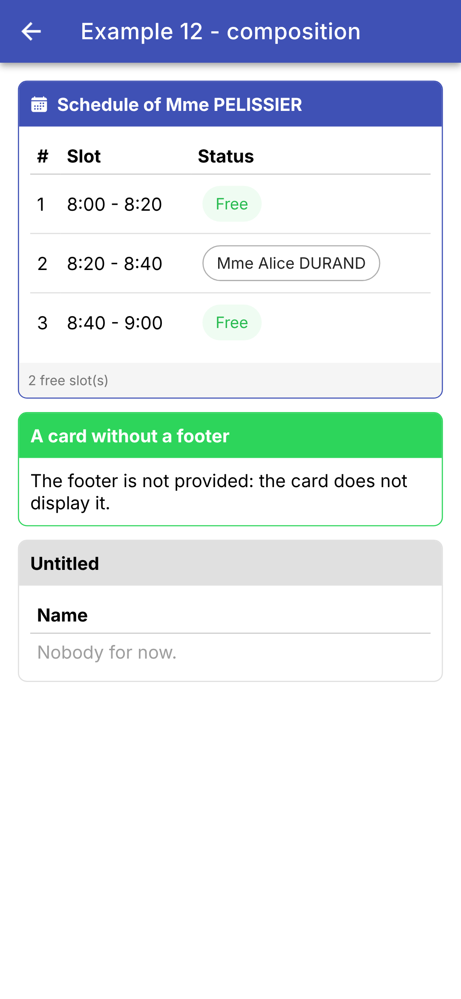
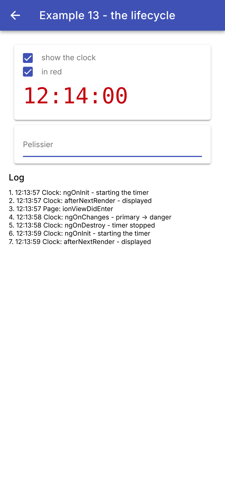

4. Componentes
Escrever seus próprios componentes está no centro do trabalho com o [Angular] e o [Ionic]: uma tela bem escrita é composta de pequenos componentes, cada um com suas entradas, seu template, seu estilo e, se necessário, seu estado. Este capítulo mostra como eles se comunicam (entradas e saídas), como são montados (projeção de conteúdo, templates), como funcionam (ciclo de vida), como compartilham dados sem passá-los de um lado para o outro (injeção de dependência) e como reutilizar comportamento (diretivas). É o equivalente do capítulo “Widgets” do curso de [Flutter]: mesmos exemplos, mesmas telas, mas com as ferramentas do [Angular].
4.1. Exemplo 10: componentes e suas entradas
4.1.1. Tipo de dados
O pai e o filho compartilham um tipo, guardado em seu próprio arquivo:
| // =========================================================================
// src/app/ex10-component-inputs/doctor.ts - o tipo dos dados
// -------------------------------------------------------------------------
// O tipo compartilhado pelo pai (Ex10Page) e pelo filho (DoctorCard).
// Uma interface TypeScript não produz código: só é usada pelo
// compilador, que verifica que cada objeto tem todos os seus campos.
// readonly: nunca modificamos um médico; construímos outro.
// =========================================================================
export interface Doctor {
readonly id: number;
readonly title: string;
readonly firstName: string;
readonly lastName: string;
readonly specialty: string;
readonly available: boolean;
}
// uma cópia em que só a disponibilidade muda: ...m copia todos os campos
// de m, depois available os substitui
export function withAvailability(m: Doctor, available: boolean): Doctor {
return { ...m, available };
}
|
- linhas 10–17: uma interface [TypeScript]: a forma de um médico. Ela não gera nenhum código em tempo de execução; é usada apenas pelo compilador, que verifica se cada objeto tem todos os seus campos com o tipo correto. [readonly] proíbe modificar um campo depois que o objeto é criado;
- linhas 21–23: uma cópia em que somente a disponibilidade muda. [{ ...m, available }] copia todos os campos de [m] (o operador de espalhamento [...]), e então o campo [available] substitui o de [m]: o objeto original nunca muda.
Enquanto o [Dart] define uma classe com um construtor de parâmetros nomeados, o [TypeScript] usa apenas uma interface e objetos literais; [{ id: 1, title: 'Mme', ... }] já tem “parâmetros nomeados”.
4.1.2. O filho
O componente [DoctorCard] exibe um médico em um cartão do [Ionic]. Como o resto do curso, ele é escrito em dois arquivos: a classe ([doctor-card.ts]) e seu template ([doctor-card.html]).
| // =========================================================================
// src/app/ex10-component-inputs/doctor-card.ts - um componente FILHO
// -------------------------------------------------------------------------
// Ele recebe seus dados do pai por meio de seus INPUTS, declarados
// pelas funções input() e input.required(). O tipo deles é verificado em
// tempo de compilação (strictTemplates): [doctor]="42" seria recusado.
// - input.required<T>(): o pai DEVE fornecer este input;
// - input(false) : um input opcional, com seu valor padrão;
// - transform : uma função que converte o valor recebido
// (booleanAttribute, numberAttribute: do Angular, para escrever
// compact ou rank="1" como simples atributos HTML).
// Um input é um SIGNAL somente leitura: nós o lemos chamando-o,
// doctor(), e a tela acompanha suas mudanças.
//
// Regra de ouro: um componente NUNCA MODIFICA seus inputs (o compilador
// de todo modo proíbe: um input() não tem set nem update). Os dados
// fluem do pai para o filho; para pedir uma mudança,
// o filho notifica seu pai com um output (veja o exemplo 11).
// =========================================================================
import { booleanAttribute, Component, computed, input, numberAttribute } from '@angular/core';
import { IonAvatar, IonCard, IonCardContent, IonLabel, IonText } from '@ionic/angular';
import { Doctor } from './doctor';
@Component({
selector: 'app-doctor-card',
imports: [IonCard, IonCardContent, IonAvatar, IonLabel, IonText],
templateUrl: './doctor-card.html',
// o "estilo" do cartão: ele se aplica SOMENTE ao template deste componente.
// O Angular adiciona às tags do template um atributo próprio e
// reescreve os seletores de acordo: nenhum outro componente pode
// ser afetado por estas regras (encapsulamento de estilo)
styles: `
ion-card { margin: 6px 0; border: 2px solid transparent; border-radius: 12px; }
ion-card.available { border-color: #4caf50; }
ion-card-content { display: flex; align-items: center; gap: 12px; padding: 12px; }
ion-avatar {
width: 40px; height: 40px; display: flex; align-items: center; justify-content: center;
background: #087ea4; color: white; font-weight: bold;
}
h2 { margin: 0; font-size: 17px; color: var(--ion-text-color); }
`,
})
export class DoctorCard {
// os inputs: um doctor obrigatório e rank, uma exibição compact opcional
readonly doctor = input.required<Doctor>();
// numberAttribute: rank="1" (uma string) vira o número 1
readonly rank = input.required({ transform: numberAttribute });
// booleanAttribute: o atributo sozinho (<app-doctor-card compact />) é true
readonly compact = input(false, { transform: booleanAttribute });
// um valor calculado a partir dos inputs: ele acompanha suas mudanças
readonly initials = computed(() => this.doctor().firstName[0] + this.doctor().lastName[0]);
}
|
- linha 26: o seletor — o nome da tag do componente. O pai escreverá [<app-doctor-card ... />];
- linha 27: os componentes do [Ionic] usados pelo template. Um componente só conhece o que importa;
- Linhas 33–42: o “estilo” do cartão. Essas regras se aplicam apenas ao template deste componente. [Angular] adiciona um atributo único às tags do template e reescreve os seletores de acordo (encapsulamento de estilo). A regra [ion-card { ... }] portanto não afeta nenhum outro cartão da aplicação. É o equivalente das constantes de estilo privadas do widget do [Flutter], ou dos “módulos CSS” do [React]: o estilo de um componente é guardado com ele e não interfere em mais nada;
- linha 35: uma borda verde para a classe [available], que o template aplica ao cartão de um médico disponível;
- linhas 37–40: o círculo das iniciais, em um azul específico do cartão;
- linha 46: uma primeira entrada, obrigatória: [input.required<Doctor>()]. O pai DEVE fornecê-la; caso contrário, o compilador rejeita o template. Ele também deve fornecer um [Doctor]: [[doctor]="42"] também seria rejeitado (opção do projeto [strictTemplates]);
- Linha 48: uma segunda entrada obrigatória, a posição, com uma transformação: [numberAttribute], uma função do [Angular] que converte o valor recebido em número. O pai pode então informar [rank="1"] (uma string, como qualquer atributo HTML) ou [[rank]="i + 1"] (um número);
- Linha 50: uma entrada opcional, com seu valor padrão ([false]) e outra transformação: [booleanAttribute]. O atributo sozinho, [<app-doctor-card compact />], é então igual a [true], como o atributo [disabled] de um botão HTML;
- linha 53: um valor calculado a partir das entradas. Uma entrada é um SIGNAL somente leitura: ela é lida chamando-a ([this.doctor()]), e [computed] recalcula as iniciais sempre que o pai especifica um médico diferente.
| <!-- ======================================================================
doctor-card.html - o template do componente DoctorCard
Ele só lê os inputs do componente: doctor(), rank(), compact().
====================================================================== -->
<!-- [class.available]: a classe CSS available (uma borda verde)
só é aplicada se o médico estiver disponível -->
<ion-card [class.available]="doctor().available">
<ion-card-content>
<!-- um disco colorido, com as iniciais -->
<ion-avatar>{{ initials() }}</ion-avatar>
<ion-label>
<h2>{{ rank() }}. {{ doctor().title }} {{ doctor().firstName }} {{ doctor().lastName }}</h2>
<!-- a especialidade só existe na exibição não compacta -->
@if (!compact()) {
<ion-text color="medium">{{ doctor().specialty }}</ion-text>
}
</ion-label>
</ion-card-content>
</ion-card>
|
- linha 8: [[class.available]="..."] coloca a classe CSS [available] no cartão quando a expressão é verdadeira e a remove caso contrário;
- linha 11: um [ion-avatar] (um disco), com as iniciais;
- linha 13: a posição e o nome do médico, lidos das entradas;
- linhas 15–17: a especialidade é exibida apenas no modo não compacto.
Regra de ouro: um componente nunca modifica suas entradas. O compilador, aliás, proíbe isso: um signal criado por [input()] não tem [set] nem [update]. Os dados fluem do pai para o filho; para pedir uma alteração, o filho notifica o pai por meio de uma saída (Exemplo 11). Quando o pai altera seus dados, o [Angular] atribui os novos valores às entradas dos filhos, e a tela é atualizada de acordo.
4.1.3. O pai
| // =========================================================================
// src/app/ex10-component-inputs/ex10.page.ts - o componente PAI
// -------------------------------------------------------------------------
// Ele importa o componente DoctorCard e o usa, quantas vezes
// for preciso, como qualquer componente Ionic: um componente é uma
// peça de interface REUTILIZÁVEL, com seus próprios inputs, seu template
// e seu estilo. Escrever seus próprios componentes é o coração do trabalho
// com o Angular: uma tela bem escrita é feita de pequenos componentes.
// =========================================================================
import { Component, signal } from '@angular/core';
import {
IonBackButton, IonButton, IonButtons, IonContent, IonHeader, IonText, IonTitle, IonToggle, IonToolbar,
} from '@ionic/angular';
import { DoctorCard } from './doctor-card';
import { withAvailability, Doctor } from './doctor';
@Component({
selector: 'app-ex10',
// importamos DoctorCard como importamos os componentes do Ionic
imports: [
IonHeader, IonToolbar, IonButtons, IonBackButton, IonTitle, IonContent, IonToggle, IonButton, IonText,
DoctorCard,
],
templateUrl: './ex10.page.html',
})
export class Ex10Page {
// o estado do pai: a lista de médicos (que será substituída por
// outra, nunca modificada no local) e a exibição compacta
readonly doctors = signal<Doctor[]>([
{ id: 1, title: 'Mme', firstName: 'Marie', lastName: 'PELISSIER', specialty: 'general practitioner', available: true },
{ id: 2, title: 'Mr', firstName: 'Paul', lastName: 'TATOU', specialty: 'pediatrician', available: false },
{ id: 3, title: 'Melle', firstName: 'Sophie', lastName: 'DUPONT', specialty: 'general practitioner', available: true },
]);
readonly compact = signal(false);
// o pai muda SEUS dados: uma nova lista, feita de cópias.
// O Angular atualiza os inputs dos cartões, que acompanham
toggleAvailability(): void {
this.doctors.update((list) => list.map((m) => withAvailability(m, !m.available)));
}
}
|
- linha 15: o pai importa o componente [DoctorCard]...
- linhas 21–24: ... e o declara em seus [imports], exatamente como os componentes do [Ionic]: um componente personalizado é usado exatamente como um componente do framework;
- linhas 30–35: o estado do pai: a lista de médicos (um signal cujo valor será substituído por outra lista, nunca modificado no próprio lugar) e a exibição compacta;
- linhas 39–41: o pai substitui SEUS dados por uma nova lista formada por cópias dos médicos. O [Angular] fornece aos cartões suas novas entradas, e eles se atualizam.
| <!-- ======================================================================
ex10.page.html - o template do pai: ele usa <app-doctor-card>
====================================================================== -->
<ion-header>
<ion-toolbar color="primary">
<ion-buttons slot="start">
<ion-back-button defaultHref="/" />
</ion-buttons>
<ion-title>Example 10 - components and their inputs</ion-title>
</ion-toolbar>
</ion-header>
<ion-content class="ion-padding">
<!-- justify="space-between": o rótulo à esquerda, o toggle à direita -->
<ion-toggle justify="space-between" [checked]="compact()" (ionChange)="compact.set($event.detail.checked)">
compact display
</ion-toggle>
<ion-button fill="outline" (click)="toggleAvailability()">Toggle the availabilities</ion-button>
<!-- um cartão por médico; cada cartão recebe SEUS inputs por [input]="expression" -->
@for (m of doctors(); track m.id; let i = $index) {
<app-doctor-card [doctor]="m" [rank]="i + 1" [compact]="compact()" />
}
<p><ion-text color="medium">The same card, in its compact version, by fixing the input:</ion-text></p>
<!-- rank="1" e compact: atributos simples, convertidos pelas transformações
numberAttribute e booleanAttribute -->
<div style="width: 260px">
<app-doctor-card [doctor]="doctors()[0]" rank="1" compact />
</div>
</ion-content>
|
- linhas 16–18: um interruptor do [Ionic] ([ion-toggle]), o equivalente de [SwitchListTile] do [Flutter]. [justify="space-between"] coloca o rótulo à esquerda e o interruptor à direita; [(ionChange)] é o evento disparado a cada alteração, e [$event.detail.checked] é seu novo estado;
- linha 20: um botão com borda ([fill="outline"]), o equivalente de [OutlinedButton];
- linhas 23–25: um card por médico. [track m.id] informa ao [Angular] como identificar um médico de uma lista para outra (o equivalente da chave [ValueKey(m.id)] do [Flutter]); [let i = $index] especifica a posição do elemento. Cada card recebe SEUS inputs, com a sintaxe [[input]="expression"]: a expressão é avaliada no pai, e seu valor é passado ao input do filho;
- linha 31: o mesmo card, em versão compacta, em uma caixa de 260 pixels de largura. [rank="1"] e [compact] são escritos como simples atributos HTML: as transformações do filho [numberAttribute] e [booleanAttribute] os convertem em [1] e [true].
Inicialmente, e depois na visualização compacta, a disponibilidade é invertida:
Isto é um método que cria um fragmento de template ou um componente de verdade? [Angular] deixa pouca margem para escolha: um fragmento de interface reutilizável é um componente. Isso é bom: ele tem um nome, seus inputs são tipados e validados em tempo de compilação, sua estilização é encapsulada e ele pode ser reutilizado em outros lugares. Enquanto o [Flutter] passa os dados pelos parâmetros do construtor de um widget, o [Angular] os passa por inputs, que são signals: o filho não precisa fazer nada para acompanhar suas mudanças.
4.2. Exemplo 11: o filho notifica o pai
Os dados fluem para baixo por meio de inputs; a informação volta para cima por meio de outputs: eventos que o filho emite e que o pai escuta, assim como escuta o evento [(click)] de um botão.
4.2.1. "Eventos" do filho
| // =========================================================================
// src/app/ex11-lifting-state-up/counter.ts
// -------------------------------------------------------------------------
// Um filho que NOTIFICA seu pai: ele declara OUTPUTS,
// com a função output(), e os "emite" quando algo acontece.
// O pai se inscreve neles em seu template, como no evento (click) de um
// botão:
// <app-counter label="Coffees" [max]="3" (incremented)="..." (limit)="..." />
// - output<number>(): um evento que carrega um número ($event);
// - output<void>() : um evento sem dados.
// =========================================================================
import { Component, input, output, signal } from '@angular/core';
import { IonButton, IonChip } from '@ionic/angular';
@Component({
selector: 'app-counter',
imports: [IonButton, IonChip],
templateUrl: './counter.html',
styles: `
:host { display: flex; align-items: center; }
.label { width: 110px; }
`,
})
export class Counter {
// os inputs (o que flui para baixo)...
readonly label = input.required<string>();
readonly max = input.required<number>();
// ... e os outputs (o que flui para cima)
readonly incremented = output<number>(); // com o novo valor
readonly limit = output<void>(); // sem dados
// o estado ESPECÍFICO deste contador: cada Counter tem o seu
readonly value = signal(0);
plus(): void {
if (this.value() >= this.max()) {
// emit(): notifica todos que estão escutando o output
this.limit.emit();
return;
}
this.value.update((v) => v + 1);
// NOTIFICAMOS o pai, passando-lhe o novo valor
this.incremented.emit(this.value());
}
}
|
- linhas 20–23: o estilo do componente. [:host] refere-se à própria tag do componente ([<app-counter>]), cujos filhos são alinhados em uma única linha ([display: flex]);
- linhas 27–28: os inputs: o que flui do pai para baixo;
- linhas 30–31: os outputs: o que volta para cima, para o pai. [output<number>()] declara um evento que carrega um número; [output<void>()] declara um evento sem dados. Eles são os equivalentes dos parâmetros [onIncrement] (um [ValueChanged<int>]) e [onLimit] (um [VoidCallback]) do contador do [Flutter]: em vez de receber funções do pai, o filho emite eventos, nos quais o pai se inscreve;
- linha 34: o estado ESPECÍFICO deste contador; cada [Counter] tem o seu;
- linhas 36–45: se o máximo for ultrapassado, o contador notifica o pai ([this.limit.emit()]); caso contrário, altera seu estado e em seguida notifica o pai transmitindo o novo valor ([this.incremented.emit(...)]). O signal já tem seu novo valor quando é lido na linha 44.
| <!-- ======================================================================
counter.html - um rótulo, um botão +1 e o valor do contador
====================================================================== -->
<span class="label">{{ label() }}</span>
<ion-button fill="outline" (click)="plus()">+1</ion-button>
<ion-chip [outline]="true">{{ value() }} / {{ max() }}</ion-chip>
|
- Linhas 4–6: um rótulo, um botão ([+1]) e um chip ([ion-chip]) que exibe o valor e o máximo.
4.2.2. Um componente controlado
Um campo de formulário personalizado (rótulo + campo + dica + contador de caracteres) que funciona como um campo controlado: o valor pertence ao pai, que o passa ao campo e é notificado a cada tecla digitada. O [Angular] tem uma função pronta para essa finalidade, [model()].
| // =========================================================================
// src/app/ex11-lifting-state-up/text-field.ts - um componente CONTROLADO
// -------------------------------------------------------------------------
// Um campo de formulário "caseiro" (rótulo + campo + ajuda + contador de
// caracteres) que é usado como um campo controlado, com um
// binding BIDIRECIONAL:
// <app-text-field [(value)]="firstName" label="First name" [max]="20" />
// O valor pertence ao PAI (seu signal firstName). model() declara de
// uma só vez um input (value) e um output (valueChange):
// - o pai passa seu valor ao campo: [value]="firstName()";
// - o campo muda o valor: value.set(...), o que emite valueChange;
// - a sintaxe [(value)]="firstName" (a "banana in a box") escreve
// os dois de uma vez: o signal do pai acompanha a digitação.
// Quando o próprio pai muda o valor (botão Limpar), o campo acompanha,
// sem nada mais a escrever: um input é um signal.
//
// A mensagem de erro (errorText): o Ionic só a exibe se o campo tiver
// as classes ion-invalid e ion-touched, que ele mesmo copia do estado
// do form control do Angular (ngModel, veja os exemplos 07 e 08).
// Passamos, portanto, pelo ngModel e definimos o erro do seu control.
// =========================================================================
import { Component, computed, effect, input, model, viewChild } from '@angular/core';
import { FormsModule, NgModel } from '@angular/forms';
import { IonInput } from '@ionic/angular';
@Component({
selector: 'app-text-field',
imports: [IonInput, FormsModule],
templateUrl: './text-field.html',
})
export class TextField {
// model.required: um input obrigatório... que o componente pode modificar
readonly value = model.required<string>();
readonly label = input.required<string>();
readonly max = input.required<number>();
readonly help = input('');
// o campo está cheio?
readonly full = computed(() => this.value().length === this.max());
// o ngModel do template e o form control que ele gerencia
private readonly model = viewChild.required(NgModel);
constructor() {
// um effect: é reexecutado a cada vez que full() muda. Ele declara
// o control como "touched" e "em erro" quando o campo está cheio
effect(() => {
const control = this.model().control;
control.markAsTouched();
control.setErrors(this.full() ? { full: true } : null);
});
}
}
|
- Linha 34: [model.required<string>()] declara ao mesmo tempo um input ([value]) e um output ([valueChange]). Trata-se de um signal que o próprio componente pode modificar: [this.value.set('...')] altera seu valor E emite [valueChange], o que notifica o pai. O pai escreverá [[(value)]="firstName"] (a “banana in a box”): seu signal [firstName] é passado ao campo, que o acompanha;
- linhas 35–37: os demais inputs: o rótulo, o comprimento máximo e um texto de ajuda opcional (vazio por padrão);
- linha 40: o campo está cheio? Um valor calculado a partir do valor e do máximo;
- linha 43: [viewChild.required(NgModel)]: a diretiva de template [ngModel] (o controle de formulário do [Angular], visto nos exemplos 07 e 08), na forma de um signal;
- Linhas 48–52: um EFFECT: uma função que é reexecutada sempre que um signal que ela monitora muda (aqui, [full()]). Ela marca o controle como “touched” e o coloca em erro quando o campo está cheio. Por que passar pela verificação do formulário? Porque o [Ionic] só exibe a mensagem de erro de um [ion-input] ([errorText]) se o campo tiver as classes CSS [ion-invalid] e [ion-touched]; e, com o [Angular], ele mesmo gera essas classes com base no estado do controle de formulário (suas classes [ng-invalid] e [ng-touched]). Defini-las manualmente seria inútil: o [Ionic] as removeria na tecla seguinte.
| <!-- ======================================================================
text-field.html - um ion-input, controlado pelo valor do pai
====================================================================== -->
<!-- [(ngModel)]="value": o binding bidirecional entre o campo e o
signal value (o model() do componente): cada tecla digitada faz value.set(...),
o que emite valueChange para o pai; um novo valor vindo do pai
é exibido no campo.
[maxlength]: o campo recusa os caracteres excedentes;
[counter]: exibe um contador ("5 / 20");
errorText substitui helperText (e o campo fica vermelho) quando o controle está com erro -->
<ion-input
[(ngModel)]="value"
[label]="label()"
labelPlacement="floating"
[maxlength]="max()"
[counter]="true"
[helperText]="help()"
errorText="Maximum length reached"
/>
|
- Linha 13: [[(ngModel)]="value"]: a ligação bidirecional entre o campo e o signal [value]. [ngModel] aceita um signal editável: cada tecla digitada dispara [value.set(...)], o que notifica o pai; um novo valor vindo do pai é exibido no campo;
- linhas 14–15: o rótulo, que “flutua” acima do campo quando este tem um valor ou está em foco;
- linha 16: o campo rejeita quaisquer caracteres excedentes;
- linha 17: exibe um contador (“5 / 20”);
- linha 18: uma dica abaixo do campo;
- linha 19: a mensagem que substitui a dica e deixa o campo vermelho quando o controle está em erro (o campo está cheio).
O campo do [Flutter] tinha uma dificuldade particular: um [TextField] guarda seu texto em um controller, que precisava ser mantido atualizado em [didUpdateWidget] sempre que o próprio pai alterava o valor (por meio do botão “Clear”). Nada disso aqui: o valor do pai chega por um signal, e [ngModel] o copia de volta para o campo assim que ele muda.
4.2.3. O pai
| // =========================================================================
// src/app/ex11-lifting-state-up/ex11.page.ts - o pai escuta seus filhos
// -------------------------------------------------------------------------
// Os dados fluem para baixo (inputs); a informação flui para cima por meio dos
// OUTPUTS dos filhos:
// 1. "eventos" do filho: (incremented), (limit);
// 2. um componente controlado: [(value)], como o [(ngModel)] de um campo.
// O estado continua sendo propriedade do pai, que pode modificá-lo ele mesmo (Limpar).
// =========================================================================
import { Component, signal } from '@angular/core';
import {
IonBackButton, IonButton, IonButtons, IonCard, IonCardContent, IonCardHeader, IonCardSubtitle, IonContent,
IonHeader, IonTitle, IonToolbar,
} from '@ionic/angular';
import { TextField } from './text-field';
import { Counter } from './counter';
@Component({
selector: 'app-ex11',
imports: [
IonHeader, IonToolbar, IonButtons, IonBackButton, IonTitle, IonContent, IonCard, IonCardHeader,
IonCardSubtitle, IonCardContent, IonButton, Counter, TextField,
],
templateUrl: './ex11.page.html',
})
export class Ex11Page {
readonly total = signal(0);
readonly message = signal('');
readonly firstName = signal('Marie');
readonly lastName = signal('PELISSIER');
// o método chamado por um contador: ele recebe o valor que o contador passa
onIncrement(label: string, value: number): void {
this.total.update((t) => t + 1);
this.message.set(`${label} is now ${value}`);
}
// o pai muda seus dados: os campos acompanham
clear(): void {
this.firstName.set('');
this.lastName.set('');
}
}
|
- linhas 30–31: os valores dos dois campos pertencem ao pai: dois signals;
- linhas 34–37: o método chamado quando um contador emite [incremented]: ele recebe o valor transmitido;
- linhas 40–43: o próprio pai altera o valor: os campos são limpos.
| <!-- ======================================================================
ex11.page.html - o template do pai: ele escuta os outputs dos filhos
====================================================================== -->
<ion-header>
<ion-toolbar color="primary">
<ion-buttons slot="start">
<ion-back-button defaultHref="/" />
</ion-buttons>
<ion-title>Example 11 - the child notifies its parent</ion-title>
</ion-toolbar>
</ion-header>
<ion-content class="ion-padding">
<ion-card>
<ion-card-header>
<ion-card-subtitle>1. Outputs listened to by the parent</ion-card-subtitle>
</ion-card-header>
<ion-card-content>
<!-- (output)="statement": $event é o dado emitido pelo filho -->
<app-counter
label="Coffees"
[max]="3"
(incremented)="onIncrement('Coffees', $event)"
(limit)="message.set('No more than 3 coffees!')"
/>
<app-counter
label="Glasses of water"
[max]="8"
(incremented)="onIncrement('Glasses of water', $event)"
(limit)="message.set('Enough drinking.')"
/>
<p><em>Total clicks: {{ total() }} - {{ message() }}</em></p>
</ion-card-content>
</ion-card>
<ion-card>
<ion-card-header>
<ion-card-subtitle>2. Controlled components</ion-card-subtitle>
</ion-card-header>
<ion-card-content>
<!-- [(value)]="firstName": o binding bidirecional com um signal do pai -->
<app-text-field [(value)]="firstName" label="First name" [max]="20" help="Required" />
<app-text-field [(value)]="lastName" label="Last name" [max]="20" help="Displayed in upper case" />
<!-- os dados do pai, que acompanham a digitação -->
<p>Data of the parent: <strong>{{ firstName() }} {{ lastName().toUpperCase() }}</strong></p>
<ion-button fill="outline" (click)="clear()">Clear (from the parent)</ion-button>
</ion-card-content>
</ion-card>
</ion-content>
|
- linhas 21–26: um contador, seus inputs e seus outputs. [(incremented)="onIncrement('Coffees', $event)"]: a cada transmissão, o [Angular] executa a instrução, na qual [$event] é o dado transmitido pelo filho; o pai acrescenta a ele seu próprio argumento (o rótulo). [(limit)] executa diretamente uma instrução: [message.set(...)];
- linha 30: o segundo contador, cujos outputs são escutados da mesma forma, com seu próprio rótulo (“Glasses of water”);
- linhas 43–44: dois campos controlados, ligados aos signals do pai [firstName] e [lastName] por meio de [[(value)]]. O pai passa o próprio signal ([firstName], sem parênteses): o [Angular] o lê e o modifica;
- linha 46: os dados do pai, que acompanham a digitação;
- linha 47: o próprio pai altera o valor: os campos são limpos.
Pressione o primeiro contador quatro vezes (na quarta vez, ele emite [limit]), o segundo uma vez, e preencha o nome; em seguida, limpe os campos a partir do pai:
Inputs e outputs: esse é todo o diálogo entre um pai e seus filhos no [Angular]. [Flutter] passava funções como parâmetros ([onIncrement: (v) => ...]), assim como o [React] passa funções como “props”; o [Angular] prefere eventos, escutados com a mesma sintaxe dos eventos do navegador ([(click)], [(incremented)]). E o binding bidirecional [[( )]], que o [Flutter] e o [React] escrevem manualmente (um valor + uma função [onChanged]), aqui é uma sintaxe de template.
4.3. Exemplo 12: composição
4.3.1. Um card
Os inputs de um componente transmitem dados... O conteúdo em si é escrito entre suas tags, como em uma tag HTML: [<app-card>...here...</app-card>]. O componente o coloca onde quiser em seu template, usando a tag [<ng-content>]: é a projeção de conteúdo. [Ionic] a usa em toda parte: o texto de um [ion-button], o conteúdo de um [ion-card], ou de um [ion-item] é projetado. É o equivalente dos parâmetros [child], [title] ou [body] dos widgets do [Flutter], que recebem outros widgets.
| // =========================================================================
// src/app/ex12-composition/card.ts - um TEMPLATE reutilizável
// -------------------------------------------------------------------------
// Os inputs de um componente passam DADOS... O CONTEÚDO, por sua vez,
// é escrito entre suas tags, como em uma tag HTML, e o componente
// o coloca onde quiser, com a tag <ng-content>: isso é a
// PROJEÇÃO de conteúdo. O Ionic a usa em toda parte: o conteúdo de um <ion-button>,
// de um <ion-card>, de um <ion-item>...
// - <ng-content />: o conteúdo "principal" (tudo que não está em outro lugar);
// - <ng-content select="[header]">: outro lugar (um "slot"),
// para as tags do pai que carregam o atributo header; o que
// escrevemos entre <ng-content> e </ng-content> é o conteúdo padrão;
// - o rodapé é opcional: o cartão o procura em seu conteúdo
// (contentChild) e só o exibe se ele estiver lá.
// O cartão define a moldura (borda, cabeçalho, rodapé), o pai fornece o que
// vai dentro.
// =========================================================================
import { Component, computed, contentChild, Directive, input } from '@angular/core';
// um MARCADOR: uma diretiva sem código, aplicada pelo pai em seu rodapé
// (<span footer>...</span>), para que o cartão possa encontrá-lo
@Directive({ selector: '[footer]' })
export class CardFooter {}
@Component({
selector: 'app-card',
templateUrl: './card.html',
styles: `
:host { display: block; margin: 0 0 12px; border: 1px solid var(--bg); border-radius: 8px; overflow: hidden; }
.header { background: var(--bg); padding: 10px; font-weight: bold; }
.header.colored { color: white; }
.body { padding: 10px; }
.footer { background: #f5f5f5; padding: 8px; color: #757575; font-size: 12px; }
`,
// host: bindings na própria tag <app-card>. Aqui, uma
// variável CSS (--bg), lida pelas regras acima
host: { '[style.--bg]': 'background()' },
})
export class Card {
// uma cor do Ionic, opcional ('primary', 'success'...): undefined por padrão
readonly color = input<string>();
readonly background = computed(() => (this.color() ? `var(--ion-color-${this.color()})` : '#e0e0e0'));
// contentChild: o primeiro elemento do CONTEÚDO que carrega a diretiva
// CardFooter; um signal, undefined se não houver nenhum
readonly footer = contentChild(CardFooter);
}
|
- linhas 23–24: um MARCADOR — uma diretiva (uma classe sem template; veja o Exemplo 15) — que não faz nada. O pai o coloca em seu rodapé, [<span footer>...</span>], para que o card possa localizá-lo em seu conteúdo;
- linhas 29–35: o estilo do card. As cores vêm de uma variável CSS, [--bg];
- linha 38: [host]: bindings na própria tag do componente ([<app-card>]). Aqui, a variável CSS [--bg] recebe o valor calculado [background()];
- linha 42: um input opcional sem valor padrão: [undefined] se o pai não o fornecer. Como os componentes do [Ionic], o card recebe o nome de uma cor do tema ([primary], [success]...);
- linha 43: a cor de fundo: a variável CSS do [Ionic] que corresponde a essa cor ([var(--ion-color-primary)]...), ou cinza-claro;
- linha 47: [contentChild(CardFooter)] procura, no CONTEÚDO fornecido pelo pai, o primeiro elemento que contém a diretiva [CardFooter]. É um signal: [undefined] se nenhum for encontrado.
| <!-- ======================================================================
card.html - a moldura do card e três lugares para o conteúdo
====================================================================== -->
<!-- o cabeçalho: os estilos de .header (negrito, branco sobre uma cor)
aplicam-se, por herança, a TODOS os textos fornecidos pelo pai -->
<div class="header" [class.colored]="color()">
<ng-content select="[header]">Untitled</ng-content>
</div>
<!-- o conteúdo principal, fornecido pelo pai -->
<div class="body">
<ng-content />
</div>
<!-- nenhum rodapé fornecido: nenhum rodapé -->
@if (footer()) {
<div class="footer">
<ng-content select="[footer]" />
</div>
}
|
- linhas 7–9: o cabeçalho. [<ng-content select="[header]">] é um slot: ele recebe as tags de conteúdo que correspondem ao seletor CSS [[header]], isto é, aquelas que têm o atributo [header]. O texto entre [<ng-content>] e [</ng-content>] (“Untitled”) é o conteúdo padrão, exibido quando o pai não fornece um cabeçalho. Os estilos de [.header] (negrito, texto branco sobre fundo colorido) são aplicados, por herança, a todo o texto fornecido pelo pai: é o equivalente de [DefaultTextStyle] no [Flutter];
- linhas 12–14: o conteúdo principal: [<ng-content />], sem seletor, recebe tudo o que não foi para nenhum outro local;
- linhas 17–21: sem rodapé fornecido: nenhum rodapé (nem sua margem nem seu fundo cinza).
4.3.2. Uma tabela genérica
| // =========================================================================
// src/app/ex12-composition/data-table.ts - uma tabela GENÉRICA
// -------------------------------------------------------------------------
// DataTable<T> é um componente genérico: ele exibe linhas de
// qualquer tipo T. Ele sabe percorrer as linhas, mas não sabe como
// exibir UMA célula: é o pai que lhe diz, passando-lhe,
// em seu conteúdo, um TEMPLATE (<ng-template>) por coluna:
// <app-data-table [rows]="slots">
// <ng-template column="Slot" let-c>{{ c.time }}</ng-template>
// </app-data-table>
// Um <ng-template> não é exibido onde é escrito: é um pedaço
// de template "em espera", que a tabela exibe ela mesma, quantas vezes
// for preciso (ngTemplateOutlet), fornecendo-lhe seus dados (a linha,
// seu índice): let-c recebe a linha, let-i="index" seu índice.
// O conteúdo é fornecido pelo pai, mas usa dados que
// pertencem ao filho: é o equivalente dos "builders" do Flutter
// (ListView.builder) e das "render props" do React.
// =========================================================================
import { NgTemplateOutlet } from '@angular/common';
import { Component, contentChildren, Directive, inject, input, TemplateRef } from '@angular/core';
// os dados que um template de célula recebe: $implicit é o valor de
// let-c (sem nome), index o de let-i="index"
export interface CellContext<T> {
$implicit: T;
index: number;
}
// uma COLUNA: uma diretiva aplicada a um <ng-template>. Ela carrega o título
// da coluna e dá acesso ao template (TemplateRef) no qual é aplicada
@Directive({ selector: 'ng-template[column]' })
export class Column {
readonly title = input.required<string>({ alias: 'column' });
readonly template = inject<TemplateRef<CellContext<unknown>>>(TemplateRef);
}
@Component({
selector: 'app-data-table',
imports: [NgTemplateOutlet],
templateUrl: './data-table.html',
styles: `
table { width: 100%; border-collapse: collapse; }
th { text-align: left; padding: 6px; border-bottom: 1px solid #ccc; }
td { padding: 6px; border-top: 1px solid #e0e0e0; }
tbody tr:first-child td { border-top: none; }
.empty { color: #9e9e9e; padding: 6px; }
`,
})
export class DataTable<T> {
// T é deduzido do tipo de [rows]: DataTable<Slot>...
readonly rows = input.required<readonly T[]>();
// contentChildren: TODAS as colunas do conteúdo, em ordem (um signal)
readonly columns = contentChildren(Column);
}
|
- linhas 25–28: os dados que um template de célula recebe da tabela: a linha ([$implicit], o valor padrão) e sua coluna ([index]);
- linhas 32–36: uma COLUNA — uma diretiva que se aplica somente a um [<ng-template>] (seu seletor, [ng-template[column]]). Um [<ng-template>] não é exibido onde é escrito: é um fragmento de template “pendente” — um TEMPLATE — que outra parte exibirá quantas vezes forem necessárias. A diretiva carrega o título da coluna (o input [title], que assume o nome da diretiva por meio do alias: [column="Slot"]), e dá acesso ao template no qual ela é colocada ([inject(TemplateRef)]);
- Linha 50: [DataTable<T>] é um componente genérico: ele exibe linhas de qualquer tipo [T]. Ele sabe percorrer as linhas, mas não sabe exibir uma célula — o componente pai lhe diz como, passando um template para cada coluna. Esse é o princípio dos “builders” do [Flutter] ([ListView.builder], a função [cells] do exemplo [Flutter]) e das “render props” do [React]: o conteúdo é fornecido pelo pai, mas usa dados que pertencem ao filho (a linha, sua posição);
- linha 52: as linhas. [T] é inferido a partir do tipo do valor fornecido pelo pai: com [[rows]="slots"], trata-se de um [DataTable<Slot>];
- linha 54: [contentChildren(Column)]: TODAS as colunas do conteúdo, na ordem em que o pai as escreveu (um signal contendo um array).
| <!-- ======================================================================
data-table.html - uma linha de títulos, depois uma linha por elemento
====================================================================== -->
<table>
<thead>
<tr>
@for (col of columns(); track col) {
<th>{{ col.title() }}</th>
}
</tr>
</thead>
<tbody>
@for (row of rows(); track $index; let i = $index) {
<tr>
@for (col of columns(); track col) {
<!-- a célula DESTA linha e desta coluna, construída pelo template do
pai, com seus dados (context) -->
<td>
<ng-container *ngTemplateOutlet="col.template; context: { $implicit: row, index: i }" />
</td>
}
</tr>
}
</tbody>
</table>
<!-- nenhuma linha: o conteúdo [empty] fornecido pelo pai, ou um texto padrão -->
@if (rows().length === 0) {
<div class="empty">
<ng-content select="[empty]">No data.</ng-content>
</div>
}
|
- linhas 6–10: uma linha de cabeçalhos, um por coluna;
- linhas 13–23: uma linha de tabela por elemento e, em cada linha, uma célula por coluna;
- linha 19: [*ngTemplateOutlet] exibe o template da coluna ([col.template]) neste local, fornecendo-lhe seus dados ([context]): a linha e sua posição. [<ng-container>] é uma tag que não existe na página: serve apenas para carregar a diretiva;
- Linhas 27–31: nenhuma linha — o conteúdo [[empty]] fornecido pelo pai, ou um texto padrão. Os cabeçalhos das colunas continuam exibidos.
A própria tabela cria as células ([<td>]) em torno dos templates: seu estilo (margens, bordas) é, portanto, o da tabela, e o elemento pai só precisa fornecer o conteúdo dentro delas.
4.3.3. O pai
| // =========================================================================
// src/app/ex12-composition/ex12.page.ts - usando os templates Card e DataTable
// =========================================================================
import { Component } from '@angular/core';
import {
IonBackButton, IonButtons, IonChip, IonContent, IonHeader, IonIcon, IonTitle, IonToolbar,
} from '@ionic/angular';
import { addIcons } from 'ionicons';
import { calendar } from 'ionicons/icons';
import { Card, CardFooter } from './card';
import { Column, DataTable } from './data-table';
// um slot: um tipo escrito inline (sem necessidade de uma interface nomeada em outro lugar)
type Slot = { id: number; time: string; patient: string | null };
const slots: Slot[] = [
{ id: 1, time: '8:00 - 8:20', patient: null },
{ id: 2, time: '8:20 - 8:40', patient: 'Mme Alice DURAND' },
{ id: 3, time: '8:40 - 9:00', patient: null },
];
@Component({
selector: 'app-ex12',
imports: [
IonHeader, IonToolbar, IonButtons, IonBackButton, IonTitle, IonContent, IonIcon, IonChip,
Card, CardFooter, DataTable, Column,
],
templateUrl: './ex12.page.html',
})
export class Ex12Page {
readonly slots = slots;
readonly free = slots.filter((c) => c.patient === null).length;
// uma lista vazia, de um tipo dado explicitamente (nada permite deduzi-lo)
readonly persons: { id: number; name: string }[] = [];
constructor() {
addIcons({ calendar });
}
}
|
- linha 15: um horário — um tipo inline. [string | null]: um paciente, ou ninguém;
- linha 27: o pai importa os componentes [Card] e [DataTable], bem como as diretivas [CardFooter] e [Column], que utiliza em seu template;
- linha 33: o número de horários disponíveis;
- linha 35: uma lista vazia, cujo tipo é especificado explicitamente (não há como inferi-lo de outra forma).
| <!-- ======================================================================
ex12.page.html - cards e o que colocamos dentro deles
====================================================================== -->
<ion-header>
<ion-toolbar color="primary">
<ion-buttons slot="start">
<ion-back-button defaultHref="/" />
</ion-buttons>
<ion-title>Example 12 - composition</ion-title>
</ion-toolbar>
</ion-header>
<ion-content class="ion-padding">
<!-- o cabeçalho (atributo header) e o rodapé (atributo footer) vão para
seus lugares; o resto é o conteúdo principal -->
<app-card color="primary">
<div header style="display: flex; align-items: center; gap: 8px">
<ion-icon name="calendar" />
<span>Schedule of Mme PELISSIER</span>
</div>
<span footer>{{ free }} free slot(s)</span>
<!-- o conteúdo principal: uma tabela de slots, um template por coluna -->
<app-data-table [rows]="slots">
<!-- let-i="index": o índice da linha -->
<ng-template column="#" let-i="index">{{ i + 1 }}</ng-template>
<!-- let-c: a própria linha -->
<ng-template column="Slot" let-c>{{ c.time }}</ng-template>
<ng-template column="Status" let-c>
@if (c.patient) {
<ion-chip [outline]="true">{{ c.patient }}</ion-chip>
} @else {
<ion-chip color="success">Free</ion-chip>
}
</ng-template>
</app-data-table>
</app-card>
<app-card color="success">
<span header>A card without a footer</span>
The footer is not provided: the card does not display it.
</app-card>
<!-- nenhum cabeçalho fornecido: o conteúdo padrão, "Untitled" -->
<app-card>
<app-data-table [rows]="persons">
<ng-template column="Name" let-p>{{ p.name }}</ng-template>
<span empty>Nobody for now.</span>
</app-data-table>
</app-card>
</ion-content>
|
- linhas 17–37: um card, com a cor [primary];
- linhas 18–21: seu cabeçalho: uma tag com o atributo [header], que vai, portanto, para o slot [select="[header]"] do card; ele contém um ícone e um texto;
- linha 22: seu rodapé, que tem o atributo [footer] (e, portanto, a diretiva [CardFooter]);
- linhas 24–36: o conteúdo principal: uma tabela de horários, com um template por coluna. [let-c] declara uma variável de template, à qual é atribuído o valor [$implicit] do contexto (a linha); [let-i="index"] é uma variável que recebe o valor [index] (a posição). O template da coluna “Status” contém um [@if] e componentes do [Ionic] ([ion-chip]): um template é como qualquer outro template;
- linhas 39–42: um card sem rodapé;
- linhas 45–50: um card sem cabeçalho (o conteúdo padrão, “Untitled”); sua tabela está vazia e exibe o conteúdo [empty] fornecido pelo pai.
As variáveis de template ([c], [p]) são do tipo [any] aqui: o [Angular] não vincula o tipo de um [<ng-template>] ao [T] da tabela que o exibirá (poderíamos ajudá-lo a fazer isso escrevendo um método [ngTemplateContextGuard] na diretiva, como faz o [NgFor]; isso foge ao escopo deste exemplo).

O card define a estrutura (borda, cabeçalho, rodapé); o pai fornece o conteúdo dentro dela. É assim que os próprios componentes do [Ionic] são construídos: [ion-card] recebe seu cabeçalho e seu conteúdo, enquanto [ion-item] recebe elementos colocados no início ([slot="start"]) ou no fim ([slot="end"]). O [Flutter] passa o conteúdo pelos parâmetros de um widget, e o [Angular] o escreve entre as tags do componente; quando o conteúdo depende de dados do filho, o [Flutter] passa uma função, e o [Angular] passa um template ([<ng-template>]).
4.4. Exemplo 13: o ciclo de vida de um componente
4.4.1. Um relógio
| // =========================================================================
// src/app/ex13-lifecycle/clock.ts - um componente que inicia e para
// -------------------------------------------------------------------------
// A vida de um componente Angular:
// 1. constructor() : o objeto é criado; seus inputs ainda não
// têm valor;
// 2. ngOnChanges(changes) : seus inputs acabam de receber um valor
// (na primeira vez), depois a cada vez que o
// pai lhes dá um novo;
// 3. ngOnInit() : uma vez, após o primeiro ngOnChanges. O
// componente está prestes a aparecer: iniciamos aí o que
// deve ser iniciado;
// 4. afterNextRender(...) : após sua primeira renderização (suas tags
// existem na página);
// 5. ngOnDestroy() : o componente desaparece para sempre.
// PARAMOS aí o que foi iniciado.
// Um relógio inicia um timer (setInterval) quando aparece... e
// deve absolutamente pará-lo quando desaparece: caso contrário o timer
// continuaria rodando à toa, em um componente morto.
// =========================================================================
import { afterNextRender, Component, input, OnChanges, OnDestroy, OnInit, output, signal, SimpleChanges }
from '@angular/core';
// "12:05:09": a hora atual
export function currentTime(): string {
return new Date().toLocaleTimeString('en-GB');
}
@Component({
selector: 'app-clock',
templateUrl: './clock.html',
styles: `.time { font-size: 40px; font-family: 'Roboto Mono', monospace; }`,
})
export class Clock implements OnChanges, OnInit, OnDestroy {
// uma cor do Ionic: 'primary', 'danger'...
readonly color = input('primary');
// o relógio notifica seu pai de cada etapa de sua vida
readonly log = output<string>();
readonly time = signal(currentTime());
// o identificador do timer, para poder pará-lo
private timer?: ReturnType<typeof setInterval>;
constructor() {
// afterNextRender: uma função a executar UMA vez, após a próxima
// renderização. Ela é registrada no construtor (um "contexto de
// injeção" é necessário, veja o exemplo 14)
afterNextRender(() => this.log.emit('Clock: afterNextRender - displayed'));
}
// changes: os inputs que mudaram, com seu valor antigo e seu novo valor
ngOnChanges(changes: SimpleChanges<Clock>): void {
const color = changes.color;
// firstChange: o primeiro valor, recebido na criação; anotamos apenas
// as mudanças seguintes
if (color && !color.firstChange) {
this.log.emit(`Clock: ngOnChanges - ${color.previousValue} -> ${color.currentValue}`);
}
}
ngOnInit(): void {
this.log.emit('Clock: ngOnInit - starting the timer');
// a cada segundo, a hora muda: a tela acompanha o signal
this.timer = setInterval(() => this.time.set(currentTime()), 1000);
}
ngOnDestroy(): void {
clearInterval(this.timer); // a LIMPEZA
this.log.emit('Clock: ngOnDestroy - timer stopped');
}
}
|
O ciclo de vida de um componente do [Angular]:
Método | Quando? |
constructor() | O objeto acabou de ser criado; seus inputs ainda não têm valores. Aqui, chamamos inject(), effect(), afterNextRender() etc. |
ngOnChanges(changes) | Seus inputs acabaram de receber um valor (na primeira vez) e, depois, a cada vez que o pai lhes atribui um novo |
ngOnInit() | Uma única vez, imediatamente após o primeiro ngOnChanges: o componente está prestes a aparecer. Aqui, iniciamos tudo o que precisa ser iniciado (timer, inscrição etc.) |
afterNextRender(...) | depois da próxima renderização: as tags do componente existem na página |
ngOnDestroy() | O componente desaparece definitivamente. Pare aqui tudo o que foi iniciado |
- linhas 26–28: a hora atual, no formato de 24 horas do [en-GB] (“12:05:09”);
- linha 35: [implements OnChanges, OnInit, OnDestroy]: interfaces do [Angular], que exigem que a classe implemente os métodos correspondentes (o compilador verifica seus nomes e parâmetros). O [Angular] chama esses métodos se os encontrar, sejam eles interfaces ou não;
- linha 37: a cor do relógio: uma cor do [Ionic];
- linha 39: o relógio notifica seu pai de cada etapa de seu ciclo de vida por meio de um output (Exemplo 11);
- linhas 41–43: o estado: a hora exibida e o identificador do timer, para que ele possa ser parado;
- linha 49: [afterNextRender] registra uma função a ser executada uma única vez, após a próxima exibição. Ele é chamado no construtor porque exige um “contexto de injeção” (exemplo 14). Ele não emite seus resultados dentro do próprio construtor: nesse momento, o pai ainda não se inscreveu nele;
- Linhas 53–60: [ngOnChanges] recebe os inputs que mudaram, cada um com seu valor antigo ([previousValue]), seu novo valor ([currentValue]) e [firstChange], que é true para o primeiro valor, recebido na criação. Apenas as mudanças seguintes são registradas: o pai alterou a cor. É o equivalente de [didUpdateWidget] do [Flutter];
- linhas 62–66: [ngOnInit]: um timer periódico ([setInterval]) é iniciado; sua função é chamada a cada segundo e atualiza a hora. É o equivalente de [initState];
- linhas 68–71: limpeza: o timer é parado ([clearInterval]). Sem isso, ele continuaria a executar inutilmente em um componente morto e o manteria na memória (um vazamento de memória). É o equivalente de [dispose].
| <!-- ======================================================================
clock.html - a hora, em tamanho grande, na cor solicitada
====================================================================== -->
<div class="time" [style.color]="'var(--ion-color-' + color() + ')'">{{ time() }}</div>
|
- Linha 4: a hora, exibida em destaque; sua cor é determinada pela variável CSS do [Ionic] que corresponde ao nome recebido ([var(--ion-color-danger)]...).
Com signals, muitas vezes é possível dispensar o [ngOnChanges]: um input é um signal, que é acompanhado automaticamente por um [computed] ou por um [effect] (Exemplo 11). [ngOnChanges] continua útil, como aqui, para obter o valor ANTIGO.
4.4.2. O pai
| // =========================================================================
// src/app/ex13-lifecycle/ex13.page.ts - o ciclo de vida
// -------------------------------------------------------------------------
// - @if (withClock()) { <app-clock ... /> }: marcar / desmarcar a caixa
// faz o componente aparecer / desaparecer (ngOnInit, depois ngOnDestroy,
// veja clock.ts); mudar sua cor muda seu input (ngOnChanges);
// - um campo de busca que recebe o foco assim que aparece
// (afterNextRender);
// - o título da aba do navegador acompanha a digitação (um effect, effect());
// - os eventos de PÁGINA do Ionic (ionViewDidEnter, ionViewWillLeave...):
// a página se torna visível, ou deixa de ser, sem ser destruída;
// - a vida da APLICAÇÃO: em um celular, ela vai para segundo plano
// (outra aplicação é aberta, a tela se apaga) e depois volta.
// =========================================================================
import {
afterNextRender, Component, DestroyRef, effect, inject, Injector, signal, viewChild,
} from '@angular/core';
import { Title } from '@angular/platform-browser';
import {
IonBackButton, IonButton, IonButtons, IonCard, IonCardContent, IonCheckbox, IonContent, IonHeader, IonInput,
IonTitle, IonToolbar, ViewDidEnter, ViewWillLeave,
} from '@ionic/angular';
import { currentTime, Clock } from './clock';
@Component({
selector: 'app-ex13',
imports: [
IonHeader, IonToolbar, IonButtons, IonBackButton, IonTitle, IonContent, IonCard, IonCardContent, IonCheckbox,
IonButton, IonInput, Clock,
],
templateUrl: './ex13.page.html',
})
export class Ex13Page implements ViewDidEnter, ViewWillLeave {
readonly withClock = signal(true);
readonly red = signal(false);
readonly log = signal<string[]>([]);
readonly search = signal('');
readonly showSearch = signal(false);
// o campo de busca: um signal, undefined enquanto o campo não existir
private readonly field = viewChild(IonInput);
private readonly injector = inject(Injector);
constructor() {
// o serviço Title do Angular: o título da página HTML (a aba do
// navegador). Um EFFECT: a função é reexecutada a cada vez que um
// signal que ela lê (search) muda
const title = inject(Title);
const initialTitle = title.getTitle();
effect(() => title.setTitle(this.search() === '' ? 'Example 13' : `Search: ${this.search()}`));
// a aplicação vai para segundo plano (hidden) ou volta (visible)
const onVisibility = () => this.trace(`Application: ${document.visibilityState}`);
document.addEventListener('visibilitychange', onVisibility);
// DestroyRef: outra forma de escrever ngOnDestroy, onde iniciamos
// algo. A limpeza é escrita bem ao lado do início
inject(DestroyRef).onDestroy(() => {
document.removeEventListener('visibilitychange', onVisibility);
title.setTitle(initialTitle);
});
}
trace(message: string): void {
this.log.update((j) => [...j, `${currentTime()} ${message}`]);
}
// os eventos de página do Ionic: a página entrou na tela...
ionViewDidEnter(): void {
this.trace('Page: ionViewDidEnter');
}
// ... ou está prestes a sair dela (outra página vem à frente, ou voltamos)
ionViewWillLeave(): void {
this.trace('Page: ionViewWillLeave');
}
openSearch(): void {
this.showSearch.set(true);
// o campo só existirá após a próxima renderização: damos-lhe o
// foco nesse momento (o teclado do celular abre). Fora do
// construtor, afterNextRender precisa do injetor do componente.
// getInputElement(): a tag <input> que o <ion-input> contém, depois que
// o Ionic a construiu (uma promise)
afterNextRender(async () => (await this.field()?.getInputElement())?.focus(), { injector: this.injector });
}
}
|
- Linha 34: a página implementa duas interfaces do [Ionic]: [ViewDidEnter] e [ViewWillLeave] (veja abaixo);
- linha 42: [viewChild(IonInput)]: o campo de busca do template, na forma de um signal, [undefined], enquanto o campo não existir;
- linha 43: o injector do componente (exemplo 14), de que [afterNextRender] precisará na linha 85;
- linhas 49–51: o serviço [Title] do [Angular] altera o título da página HTML (o exibido na aba do navegador). Um EFFECT ([effect]): a função é reexecutada sempre que um signal que ela lê muda; o título, portanto, é atualizado conforme o texto é digitado. É o equivalente do widget [Title] do [Flutter];
- linhas 54–55: o ciclo de vida da própria aplicação. Em um celular, ela vai para segundo plano (quando outro aplicativo é aberto ou a tela se apaga) e depois volta: o evento [visibilitychange] do documento sinaliza isso ([document.visibilityState] é então igual a [hidden] ou [visible]). Você reagiria a isso para salvar um rascunho ou parar um timer. É o equivalente de [AppLifecycleListener] no [Flutter]; uma aplicação [Capacitor] também dispõe, para essa finalidade, do plugin [@capacitor/app];
- linhas 58–61: [DestroyRef]: outra forma de escrever [ngOnDestroy]. [onDestroy(...)] registra uma função chamada quando o componente é destruído; o código de limpeza fica assim escrito ao lado daquilo que ele limpa: o listener é removido e o título da página é restaurado;
- linhas 69–76: os eventos de PÁGINA do [Ionic], que não têm equivalente no [Flutter]. Ao passar de uma página para outra, o [Ionic] mantém a página anterior na memória, oculta, sem destruí-la (para que se possa voltar a ela sem precisar recriá-la): [ngOnInit] e [ngOnDestroy] portanto não indicam quando uma página se torna visível ou deixa de ser visível. Essas funções ficam a cargo de [ionViewWillEnter] e [ionViewDidEnter] (a página está prestes a aparecer / apareceu na tela), e de [ionViewWillLeave] e [ionViewDidLeave] (a página está prestes a sair / saiu da tela). É aqui que se recarregam os dados da página quando se volta a ela, por exemplo;
- linhas 78–86: o campo de busca só existirá no próximo carregamento da página; o foco é dado a ele nesse momento por meio de [afterNextRender] (o equivalente de [addPostFrameCallback]). Fora do construtor, [afterNextRender] exige que lhe seja fornecido o injector do componente. [getInputElement()] retorna (em uma promise) a tag [<input>] contida no componente [ion-input], depois que o [Ionic] a criou; damos foco a ela, e o teclado do celular se abre.
| <!-- ======================================================================
ex13.page.html - um relógio que fazemos aparecer e desaparecer
====================================================================== -->
<ion-header>
<ion-toolbar color="primary">
<ion-buttons slot="start">
<ion-back-button defaultHref="/" />
</ion-buttons>
<ion-title>Example 13 - the lifecycle</ion-title>
</ion-toolbar>
</ion-header>
<ion-content class="ion-padding">
<ion-card>
<ion-card-content>
<ion-checkbox labelPlacement="end" [checked]="withClock()" (ionChange)="withClock.set($event.detail.checked)">
show the clock
</ion-checkbox>
<br />
<ion-checkbox labelPlacement="end" [checked]="red()" (ionChange)="red.set($event.detail.checked)">
in red
</ion-checkbox>
<!-- o componente só existe se a caixa estiver marcada -->
@if (withClock()) {
<app-clock [color]="red() ? 'danger' : 'primary'" (log)="trace($event)" />
}
</ion-card-content>
</ion-card>
<ion-card>
<ion-card-content>
@if (!showSearch()) {
<ion-button fill="outline" (click)="openSearch()">Search...</ion-button>
} @else {
<ion-input
placeholder="the title follows the typing"
[value]="search()"
(ionInput)="search.set($event.detail.value ?? '')"
/>
}
</ion-card-content>
</ion-card>
<h6>Log</h6>
@for (line of log(); track $index) {
<div style="font-size: 12px">{{ $index + 1 }}. {{ line }}</div>
}
</ion-content>
|
- linhas 17–23: dois checkboxes do [Ionic] ([ion-checkbox]), com o rótulo depois do checkbox ([labelPlacement="end"]);
- Linhas 25–27: marcar a caixa exibe o relógio ([ngOnInit]); desmarcá-la o oculta ([ngOnDestroy]): [@if] realmente cria e destrói o componente. Mudar sua cor altera seu input ([ngOnChanges]);
- linhas 33–41: um campo que só aparece depois de clicar em “Search…”;
- linhas 46–48: o log.
Mudamos a cor, removemos e depois restauramos o relógio, abrimos a busca e digitamos um nome:

O log mostra a atividade do relógio: inicialização e exibição inicial, mudança de cor, desligamento e reinício; e, entre uma coisa e outra, a página aparecendo na tela ([ionViewDidEnter]). O campo recebeu foco por conta própria: digitamos o nome no teclado sem tocar nele, e o título da aba do navegador foi atualizado conforme digitávamos (“Search: Pelissier”, não visível na captura de tela).
O mapeamento para o [Flutter] é direto: [initState] se torna [ngOnInit] (ou o construtor, para elementos que não dependem de inputs), [didUpdateWidget] se torna [ngOnChanges] (ou [effect] para um input), [dispose] se torna [ngOnDestroy] (ou [DestroyRef.onDestroy]), [addPostFrameCallback] se torna [afterNextRender]. Quem leu o curso de [React] reconhecerá [effect] e [DestroyRef] como as duas metades de [useEffect]: o efeito e sua função de limpeza.
4.5. Exemplo 14: injeção de dependência
Como compartilhar dados e funções entre componentes distantes sem passá-los de input em input por todos os intermediários? O [Flutter] resolve isso com dados herdados ([InheritedWidget]), e o [React] com contextos; o [Angular] usa serviços e injeção de dependência. É o mecanismo que o [Angular] e o [Ionic] próprios utilizam: [Router], [HttpClient], [Title], [AlertController]... são serviços solicitados por [inject(...)].
O princípio:
- Um serviço é uma classe comum, marcada com [@Injectable];
- um PROVIDER diz ao [Angular] como criar uma instância dele. Ele é declarado na raiz da aplicação ou por um componente;
- um componente (ou outro serviço) solicita o objeto por meio de [inject(Class)]: o [Angular] procura um provider no próprio componente, depois em seu pai, depois no pai desse pai..., até a raiz, e retorna o objeto do provider MAIS PRÓXIMO. Cada provider cria seu objeto uma única vez: quem o solicita compartilha o mesmo.
4.5.1. Uma única instância de dados para toda a aplicação
| // =========================================================================
// src/app/ex14-injection/providers/log.ts - um dado para TODA a aplicação
// -------------------------------------------------------------------------
// Como compartilhar dados e funções entre componentes distantes,
// sem passá-los de input em input por todos os
// intermediários? Com um SERVIÇO e a INJEÇÃO DE DEPENDÊNCIA do Angular:
// 1. um serviço é uma classe comum, marcada com @Injectable;
// 2. um PROVIDER diz ao Angular como construir um objeto dela;
// 3. qualquer componente a pede com inject(Log): o Angular
// lhe entrega o objeto do provider MAIS PRÓXIMO acima dele.
// providedIn: 'root': o provider é o da raiz da
// aplicação. Há apenas UM log, compartilhado por todos (um "singleton"),
// criado na primeira vez em que é solicitado.
// É o mecanismo que o próprio Angular e o Ionic usam: Router,
// HttpClient, AlertController... são serviços que injetamos.
//
// Os dados do serviço são SIGNALS: os componentes que os leem
// em seu template são atualizados quando eles mudam.
// =========================================================================
import { Injectable, signal } from '@angular/core';
import { currentTime } from './clock';
@Injectable({ providedIn: 'root' })
export class Log {
// privado e modificável; o público só tem uma visão somente leitura
private readonly _lines = signal<string[]>([]);
readonly lines = this._lines.asReadonly();
trace(message: string): void {
// a linha mais recente primeiro; no máximo seis linhas
this._lines.update((l) => [`${currentTime()} ${message}`, ...l].slice(0, 6));
}
}
|
- linha 24: [providedIn: 'root']: o provider do log é o da raiz da aplicação. Existe um ÚNICO log, compartilhado por todos (um “singleton”), criado na primeira vez em que é solicitado;
- Linhas 27–28: os dados do serviço são SIGNALS: os componentes que os leem em seus templates são atualizados quando os dados mudam (o equivalente de [ChangeNotifier] e [notifyListeners()] do [Flutter]). O signal editável é privado; o público recebe apenas uma visão somente leitura dele ([asReadonly()]): somente o serviço pode modificar o log, por meio de seus métodos;
- Linhas 30–33: a única forma de modificar o log é acrescentar uma nova linha no topo, com no máximo seis linhas.
4.5.2. Dados fornecidos por um componente
| // =========================================================================
// src/app/ex14-injection/providers/cart.ts - um dado fornecido por UM componente
// -------------------------------------------------------------------------
// Este serviço NÃO tem providedIn: ninguém o fornece... exceto um
// componente que o declara em seus providers:
// @Component({ ..., providers: [Cart] })
// Esse componente recebe então SEU carrinho, que ele e todos os seus
// descendentes enxergam (os componentes do seu template e os dos templates deles...),
// e somente eles. Dois componentes que o fornecem têm dois carrinhos
// independentes. O carrinho nasce com seu componente e morre com ele
// (ngOnDestroy do serviço).
// Um serviço pode, ele mesmo, injetar outros serviços: aqui, o log.
// =========================================================================
import { computed, inject, Injectable, OnDestroy, signal } from '@angular/core';
import { Log } from './log';
export interface Item {
label: string;
price: number;
}
@Injectable()
export class Cart implements OnDestroy {
private readonly log = inject(Log);
private readonly _items = signal<Item[]>([]);
readonly items = this._items.asReadonly();
// um valor calculado: reduce "dobra" a lista em um único valor
readonly total = computed(() => this._items().reduce((sum, a) => sum + a.price, 0));
add(item: Item): void {
this._items.update((a) => [...a, item]);
this.log.trace(`cart: + ${item.label}`);
}
remove(index: number): void {
this.log.trace(`cart: - ${this._items()[index].label}`);
this._items.update((a) => a.filter((_, i) => i !== index));
}
// um serviço fornecido por um componente é destruído com ele
ngOnDestroy(): void {
this.log.trace('cart: destroyed');
}
}
|
- linha 23: [@Injectable()], sem [providedIn]: ninguém fornece o carrinho de compras... exceto um componente que o declara em seus [providers] (veja [ex14.page.ts]). Esse componente passa então a ter O SEU carrinho de compras, que ele e todos os seus descendentes (os componentes de seu template, os dos templates deles...) podem ver — e somente eles. Dois componentes que o fornecem têm dois carrinhos independentes: é exatamente assim que se comporta um [InheritedWidget] colocado na árvore;
- linha 25: um serviço pode ele mesmo injetar outros serviços: o carrinho de compras registra no log cada adição e cada remoção;
- linha 29: o total, um valor calculado. [reduce] “reduz” a lista a um único valor: a soma dos preços;
- linhas 31–39: as alterações do carrinho de compras, que geram uma nova lista a cada vez;
- Linhas 42–44: um serviço fornecido por um componente é criado junto com o componente e termina junto com ele: o [Angular] chama então seu [ngOnDestroy]. Quando você voltar à página mais tarde, encontrará no log, que pertence a toda a aplicação, a linha “cart: destroyed”.
4.5.3. Um provider configurado
| // =========================================================================
// src/app/ex14-injection/providers/clock.ts - um provider PARAMETRIZADO
// -------------------------------------------------------------------------
// Um relógio, cujo período de atualização é um parâmetro do
// provider:
// @Component({ ..., providers: [provideClock(5000)] })
// O parâmetro é ele mesmo um valor injetado, designado por um TOKEN
// (InjectionToken): um provider { provide: PERIOD, useValue: 5000 }
// lhe dá seu valor. provideClock(period) retorna os dois
// providers: o do período e o do relógio.
// Dois componentes que fornecem cada um um relógio: um descendente recebe
// o do MAIS PRÓXIMO acima dele.
// O relógio para quando seu componente desaparece (ngOnDestroy).
// =========================================================================
import { inject, Injectable, InjectionToken, OnDestroy, Provider, Signal, signal } from '@angular/core';
// "12:05:09": a hora de uma data
export function currentTime(d = new Date()): string {
return d.toLocaleTimeString('en-GB');
}
// um token: designa um valor que não é uma classe (aqui um número).
// factory: o valor padrão, quando ninguém o fornece
export const CLOCK_PERIOD = new InjectionToken<number>('period of the clock (ms)', {
factory: () => 1000,
});
@Injectable()
export class Clock implements OnDestroy {
private readonly period = inject(CLOCK_PERIOD);
private readonly _now = signal(new Date());
readonly now = this._now.asReadonly();
private readonly timer = setInterval(() => this._now.set(new Date()), this.period);
ngOnDestroy(): void {
clearInterval(this.timer);
}
}
// o provider parametrizado: uma função que retorna providers
export function provideClock(period = 1000): Provider[] {
return [{ provide: CLOCK_PERIOD, useValue: period }, Clock];
}
// a leitura, com um valor padrão: uma data congelada, para um
// componente acima do qual ninguém fornece um relógio.
// optional: true: inject retorna null em vez de lançar um erro
export function injectNow(): Signal<Date> {
return inject(Clock, { optional: true })?.now ?? signal(new Date(2026, 0, 1)).asReadonly();
}
|
- linhas 25–27: um TOKEN ([InjectionToken]) refere-se a um dado injetável que não é uma classe: neste caso, um número — o período do relógio. [factory] fornece seu valor padrão quando ninguém mais o fornece;
- linhas 29–39: o relógio, um serviço que também não tem um [providedIn]. Ele injeta seu período (linha 31) e inicia um timer com esse período assim que é criado (linha 34); ele para o timer quando seu componente é destruído (linhas 36–38);
- linhas 42–44: o provider configurado: uma função que retorna dois providers. [{ provide: CLOCK_PERIOD, useValue: period }] atribui ao token o valor recebido; [Clock] (a classe sozinha) é a notação abreviada de [{ provide: Clock, useClass: Clock }]. Um componente escreverá [providers: [provideClock(5000)]]. É assim que se escrevem os próprios providers do [Angular] : [provideRouter(routes)], [provideHttpClient()] em [main.ts];
- Linhas 49–51: uma leitura, com valor padrão: uma data fixa, para um componente para o qual ninguém fornece um relógio. [{ optional: true }]: [inject] retorna [null] em vez de lançar um erro; [?.] e [??] então assumem o valor padrão. Uma função como [injectXxx()] é chamada onde quer que [inject] seja permitido: em um campo ou no construtor de um componente ou serviço (um “contexto de injeção”).
4.5.4. Os componentes
| // =========================================================================
// src/app/ex14-injection/catalog.ts - um descendente que ADICIONA ao carrinho
// =========================================================================
import { CurrencyPipe } from '@angular/common';
import { Component, inject } from '@angular/core';
import { IonButton, IonCard, IonIcon, IonItem, IonLabel, IonList } from '@ionic/angular';
import { addIcons } from 'ionicons';
import { cartOutline } from 'ionicons/icons';
import { Item, Cart } from './providers/cart';
const catalog: Item[] = [
{ label: 'Consultation', price: 30 },
{ label: 'Vaccine', price: 12.5 },
{ label: 'Certificate', price: 5 },
];
@Component({
selector: 'app-catalog',
imports: [IonCard, IonList, IonItem, IonLabel, IonButton, IonIcon, CurrencyPipe],
templateUrl: './catalog.html',
})
export class Catalog {
readonly catalog = catalog;
// o carrinho fornecido por Ex14Page (um erro se ninguém o fornecer)
readonly cart = inject(Cart);
constructor() {
addIcons({ cartOutline });
}
}
|
- Linha 26: o catálogo solicita o carrinho de compras. O [Angular] sobe a partir do catálogo até o primeiro componente que o fornece: a página. Se nenhum componente o fornecesse, [inject] lançaria um erro (“No provider for Cart”): um erro de programação, claramente indicado.
| <!-- ======================================================================
catalog.html - um item por linha e um botão para adicioná-lo
====================================================================== -->
<ion-card>
<ion-list lines="none">
@for (a of catalog; track a.label) {
<ion-item>
<!-- currency: o preço em euros, no estilo inglês ("€12.50") -->
<ion-label>{{ a.label }} ({{ a.price | currency: 'EUR' }})</ion-label>
<ion-button slot="end" fill="clear" (click)="cart.add(a)" [attr.aria-label]="'add ' + a.label">
<ion-icon slot="icon-only" name="cart-outline" />
</ion-button>
</ion-item>
}
</ion-list>
</ion-card>
|
- linha 9: a descrição e o preço do item; [currency: 'EUR'] formata o preço no estilo inglês (“€12.50”);
- linhas 10–12: um botão de ícone que adiciona o item ao carrinho. O template chama diretamente um método do serviço. [[attr.aria-label]] atribui um nome ao botão, que não tem texto (para leitores de tela e para cenários de captura de tela).
| // =========================================================================
// src/app/ex14-injection/cart-summary.ts
// -------------------------------------------------------------------------
// Outro descendente: o MESMO carrinho que Catalog (o da página),
// mas SEU PRÓPRIO relógio, atualizado a cada 5 segundos: o componente
// o fornece ele mesmo (providers). Um componente enxerga seus próprios
// providers: inject(Clock) lhe dá o mais próximo, o seu.
// =========================================================================
import { CurrencyPipe, DatePipe } from '@angular/common';
import { Component, inject } from '@angular/core';
import { IonButton, IonCard, IonCardContent } from '@ionic/angular';
import { provideClock, Clock } from './providers/clock';
import { Cart } from './providers/cart';
@Component({
selector: 'app-cart-summary',
imports: [IonCard, IonCardContent, IonButton, CurrencyPipe, DatePipe],
templateUrl: './cart-summary.html',
// um relógio de 5 s, para este componente e seus descendentes
providers: [provideClock(5000)],
})
export class CartSummary {
readonly cart = inject(Cart); // fornecido mais acima, pela página
readonly clock = inject(Clock); // o mais próximo: o de 5 s
}
|
- linha 21: o resumo fornece UM TIMER PRÓPRIO, com período de 5 segundos, a si mesmo e a seus descendentes;
- Linhas 24–25: o MESMO carrinho de compras do catálogo (o da página), mas o timer mais próximo é o seu próprio. Um componente enxerga seus próprios fornecedores: ele não precisa, como o [CartSummary] do [Flutter], confiar seu conteúdo a um pequeno widget colocado abaixo do fornecedor.
| <!-- ======================================================================
cart-summary.html - o conteúdo do carrinho e seu total
====================================================================== -->
<ion-card>
<ion-card-content>
<!-- date: 'HH:mm:ss': a hora de uma data -->
<h2>Cart ({{ cart.items().length }} item(s)) - {{ clock.now() | date: 'HH:mm:ss' }}</h2>
@for (a of cart.items(); track $index) {
<div>
{{ a.label }}
<ion-button fill="clear" size="small" (click)="cart.remove($index)">remove</ion-button>
</div>
}
<strong>Total: {{ cart.total() | currency: 'EUR' }}</strong>
</ion-card-content>
</ion-card>
|
- linha 7: o número de artigos e a hora do relógio de 5 segundos ([date: 'HH:mm:ss']: a hora de uma data específica);
- Linhas 8–13: um artigo por linha e um botão para removê-lo;
- linha 14: o total.
| // =========================================================================
// src/app/ex14-injection/ex14.page.ts - três níveis de injeção
// -------------------------------------------------------------------------
// - o log: fornecido na raiz (providedIn: 'root'), para toda a
// aplicação;
// - o carrinho, fornecido pela página (providers): compartilhado por Catalog e
// CartSummary, que enxergam o MESMO carrinho;
// - o relógio, fornecido pela página (período padrão, 1 s) E por
// CartSummary (5 s): cada um o seu.
// =========================================================================
import { DatePipe } from '@angular/common';
import { Component, inject } from '@angular/core';
import { IonBackButton, IonButtons, IonContent, IonHeader, IonText, IonTitle, IonToolbar } from '@ionic/angular';
import { Catalog } from './catalog';
import { provideClock, injectNow } from './providers/clock';
import { Log } from './providers/log';
import { Cart } from './providers/cart';
import { CartSummary } from './cart-summary';
@Component({
selector: 'app-ex14',
imports: [
IonHeader, IonToolbar, IonButtons, IonBackButton, IonTitle, IonContent, IonText, DatePipe,
Catalog, CartSummary,
],
templateUrl: './ex14.page.html',
// a página fornece um relógio (1 s) e um carrinho para si mesma e para tudo o que ela contém
providers: [provideClock(), Cart],
})
export class Ex14Page {
// o log de toda a aplicação
readonly log = inject(Log);
// a hora do relógio da página (o mais próximo: o da própria página)
readonly now = injectNow();
}
|
- linha 29: a página fornece um timer (intervalo padrão: um segundo) e um carrinho de compras a si mesma e a tudo o que ela contém;
- linha 33: a página lê o log de toda a aplicação;
- linha 35: a hora exibida no relógio da página — o mais próximo, aquele fornecido pela própria página.
| <!-- ======================================================================
ex14.page.html - a loja: o catálogo, o carrinho, o log
====================================================================== -->
<ion-header>
<ion-toolbar color="primary">
<ion-buttons slot="start">
<ion-back-button defaultHref="/" />
</ion-buttons>
<ion-title>Example 14 - dependency injection</ion-title>
</ion-toolbar>
</ion-header>
<ion-content class="ion-padding">
<ion-text color="medium">Clock of the page: {{ now() | date: 'HH:mm:ss' }}</ion-text>
<!-- nenhum input: estes componentes encontram o carrinho por injeção -->
<app-catalog />
<app-cart-summary />
<h6>Log (provided to the whole application)</h6>
@for (line of log.lines(); track $index) {
<div style="font-size: 12px">{{ line }}</div>
}
</ion-content>
|
- linhas 17–18: o catálogo e o resumo não recebem nenhum input; eles obtêm o carrinho de compras por injeção;
- linhas 20–22: o log, atualizado a cada nova linha: é um signal.
Adicionamos três itens e depois removemos o primeiro:

O relógio da página avança a cada segundo; o do carrinho de compras avança a cada cinco segundos. O log mostra as adições e remoções. O Exemplo 20 usará o mesmo mecanismo para o estado compartilhado de uma aplicação inteira: um serviço e seus signals. Onde o [Flutter] precisa de um [InheritedWidget], de um [ChangeNotifier] e de um método [of(context)] (e, na prática, do pacote [provider]), o [Angular] já inclui tudo por padrão: [@Injectable], [providers], [inject] e os signals.
4.6. Exemplo 15: reutilização de comportamentos
Um componente reutiliza um layout (um template). Como reutilizar um comportamento, junto com seu estado (destacar o que é tocado, disparar uma ação após um toque longo, dar foco na inicialização)? O [React] tem “custom hooks”; o [Flutter] tem widgets “wrapper” e mixins; o [Angular] tem diretivas de atributo, que podem ser aplicadas como atributos a qualquer tag, e sua composição.
4.6.1. Uma diretiva “highlighter”
| // =========================================================================
// src/app/ex15-behaviours/highlighter.ts - um comportamento em uma DIRETIVA
// -------------------------------------------------------------------------
// Um componente reutiliza uma EXIBIÇÃO (um template). Para reutilizar um
// COMPORTAMENTO (com seu estado), o Angular tem as DIRETIVAS de atributo: uma
// classe sem template, que aplicamos como um atributo em qualquer
// tag, e que age sobre ela (seu "host"):
// <ion-item highlighter="#d1e7dd">...</ion-item>
// Esta destaca seu host enquanto ele está sendo TOCADO (o dedo na
// tela) e, com um mouse (web, computador), enquanto o ponteiro PASSA POR CIMA.
// Cada tag tem sua própria diretiva, portanto seu próprio estado: duas linhas
// não interferem entre si.
// =========================================================================
import { computed, Directive, input, signal } from '@angular/core';
@Directive({
selector: '[highlighter]',
// host: o que a diretiva faz em seu host
host: {
// (event): os eventos do host que ela escuta. Os eventos "pointer"
// reúnem o dedo, o mouse e a caneta
'(pointerdown)': 'touched.set(true)',
'(pointerup)': 'touched.set(false)',
'(pointercancel)': 'touched.set(false)',
'(mouseenter)': 'hovered.set(true)',
'(mouseleave)': 'hovered.set(false)',
// [property]: as propriedades do host que ela define. Uma transição CSS
// anima a mudança de cor (200 ms)
'[style.backgroundColor]': 'background()',
'[style.transition]': '"background-color 200ms"',
// um ion-item desenha seu próprio fundo (a variável --background): nós o
// tornamos transparente, para deixar aparecer o da diretiva
'[style.--background]': '"transparent"',
},
})
export class Highlighter {
// o input tem o nome da diretiva: highlighter="#d1e7dd"; sem
// valor (o atributo sozinho), a cor padrão
readonly color = input('#fff3cd', { alias: 'highlighter', transform: (c: string) => c || '#fff3cd' });
readonly touched = signal(false);
readonly hovered = signal(false);
readonly background = computed(() => (this.touched() || this.hovered() ? this.color() : 'transparent'));
}
|
- linha 17: [@Directive]: uma classe sem template. Ela age sobre a tag que a carrega, seu HOST;
- linha 18: o seletor: a diretiva se aplica a qualquer tag que tenha o atributo [highlighter];
- linhas 20–35: [host]: o que a diretiva faz em seu host;
- linhas 23–27: [(event)]: os eventos do host que ela escuta. Os eventos “pointer” incluem o dedo, o mouse e a caneta stylus: pressionar, soltar e cancelar (o equivalente de [Listener] no [Flutter]); [mouseenter] e [mouseleave] sinalizam a entrada e a saída do mouse, seja na web ou em um computador (o equivalente de [MouseRegion]);
- linhas 30–31: [[property]]: as propriedades do host que ela define: a cor de fundo e uma transição CSS que anima sua mudança ao longo de 200 milissegundos (o equivalente de [AnimatedContainer]);
- linha 34: um [ion-item] desenha seu próprio fundo dentro de seu componente, com base em sua variável CSS [--background]: ela é tornada transparente para revelar o fundo da diretiva;
- linha 40: o input leva o nome da diretiva (o alias): [highlighter="#d1e7dd"] ativa a diretiva E especifica a cor. Se nenhum valor for fornecido (o atributo sozinho, que é uma string vazia), a transformação usa a cor padrão;
- linhas 42–44: o estado da diretiva — tocada, com o ponteiro sobre ela — e a cor resultante. Cada tag tem sua própria diretiva e, portanto, seu próprio estado; as duas linhas não entram em conflito.
[Highlighter] adiciona seu comportamento a qualquer tag: [<ion-item highlighter>...</ion-item>], sem envolvê-la em um componente.
4.6.2. Um gesto: toque longo
| // =========================================================================
// src/app/ex15-behaviours/long-press.ts - um gesto: o toque longo
// -------------------------------------------------------------------------
// <ion-item (longPress)="remove()" [longPressDuration]="1000">
// O output longPress só é emitido se o host for mantido pressionado
// durante toda a duração: uma proteção contra toques acidentais.
// O gesto é reconhecido por createGesture, a biblioteca de gestos
// do Ionic: ela reúne os eventos de dedo e de mouse e
// notifica o início (onStart) e o fim (onEnd) do gesto.
// A diretiva expõe seu estado (pressing): um componente que a usa
// pode exibi-lo (veja long-press-button.ts).
// =========================================================================
import { DestroyRef, Directive, ElementRef, inject, input, numberAttribute, output, signal } from '@angular/core';
import { createGesture } from '@ionic/angular';
@Directive({
selector: '[longPress]',
// preventDefault: pressionar o host não tira o foco do campo
// em que se digita (o teclado do celular continua aberto)
host: { '(mousedown)': '$event.preventDefault()' },
})
export class LongPress {
// a duração do toque, em milissegundos
readonly duration = input(1000, { alias: 'longPressDuration', transform: numberAttribute });
// o output tem o nome da diretiva: (longPress)="..."
readonly longPress = output<void>();
// o toque está em andamento?
readonly pressing = signal(false);
private timeout?: ReturnType<typeof setTimeout>;
constructor() {
// ElementRef: a tag host da diretiva
const host: HTMLElement = inject(ElementRef).nativeElement;
const gesture = createGesture({
el: host,
gestureName: 'long-press',
// threshold: 0: o gesto começa assim que o dedo toca, sem
// esperar que ele se mova
threshold: 0,
onStart: () => this.start(),
onEnd: () => this.stop(),
});
gesture.enable();
// a limpeza: quando o host é removido, não sobra nenhum gesto ou timeout órfão
inject(DestroyRef).onDestroy(() => {
gesture.destroy();
clearTimeout(this.timeout);
});
}
private start(): void {
this.pressing.set(true);
// o fim do atraso: o toque durou o suficiente
this.timeout = setTimeout(() => {
this.pressing.set(false);
this.longPress.emit();
}, this.duration());
}
// o dedo é levantado (cedo demais, ou após a ação)
private stop(): void {
clearTimeout(this.timeout);
this.pressing.set(false);
}
}
|
- linha 21: [$event.preventDefault()] em [mousedown]: tocar no host não tira o foco do campo que está sendo editado (o teclado do celular continua aberto), exatamente como os botões do [Flutter];
- linha 25: a duração do toque, em milissegundos: um único input, com valor padrão;
- linha 27: o output leva o nome da diretiva: o pai escreverá [(longPress)="remove()"], o que ativa a diretiva E escuta seu output;
- linha 29: a diretiva informa seu status: um componente que a utiliza pode exibi-lo;
- linha 35: [ElementRef]: o host da diretiva, e [nativeElement] sua tag na página;
- Linhas 36–45: [createGesture], a biblioteca de gestos do [Ionic] (a que permite arrastar menus e janelas). Ela combina eventos de dedo e de mouse e sinaliza o início ([onStart]) e o fim ([onEnd]) do gesto. [threshold: 0]: o gesto começa assim que o dedo toca a tela, sem esperar que ele se mova. Um gesto criado deve ser ativado ([enable()]);
- linhas 47–50: limpeza: quando o host é removido, não restam gestos nem timers órfãos;
- linhas 53–60: o dedo é colocado: um timer é programado para a duração desejada. Se ele chegar ao fim, o toque durou o suficiente: a diretiva emite seu resultado;
- linhas 63–66: o dedo é levantado: se for cedo demais, o timer é cancelado e nada acontece.
4.6.3. Um componente que contém uma animação
| // =========================================================================
// src/app/ex15-behaviours/long-press-button.ts - um botão de toque longo
// -------------------------------------------------------------------------
// <app-long-press-button [duration]="1000" (action)="remove()">Delete</app-long-press-button>
// Um componente que carrega uma ANIMAÇÃO: um anel se preenche durante
// o toque e se esvazia se o dedo for levantado cedo demais.
// - o comportamento (o gesto) não é reescrito: o componente
// ANEXA a si mesmo a diretiva LongPress (hostDirectives), como se tivéssemos
// escrito <app-long-press-button longPress>; de passagem, ele renomeia seu
// input (duration) e seu output (action);
// - a animação é feita por createAnimation, a biblioteca de animação
// do Ionic (a de suas próprias transições).
// =========================================================================
import { Component, effect, ElementRef, inject, viewChild } from '@angular/core';
import { Animation, createAnimation } from '@ionic/angular';
import { LongPress } from './long-press';
// a circunferência do anel (raio 10): o comprimento do traço
const CIRCUMFERENCE = 2 * Math.PI * 10;
@Component({
selector: 'app-long-press-button',
templateUrl: './long-press-button.html',
// a diretiva LongPress, aplicada à tag do componente
hostDirectives: [{ directive: LongPress, inputs: ['longPressDuration: duration'], outputs: ['longPress: action'] }],
styles: `
:host { display: inline-flex; align-items: center; gap: 8px; color: var(--ion-color-danger);
font-size: 13px; cursor: pointer; user-select: none; touch-action: none; }
svg { width: 22px; height: 22px; transform: rotate(-90deg); }
circle { fill: none; stroke: var(--ion-color-danger); stroke-width: 3; }
`,
})
export class LongPressButton {
// a diretiva anexada: o componente lê seu estado
private readonly press = inject(LongPress);
private readonly circle = viewChild.required<ElementRef<SVGCircleElement>>('circle');
readonly circumference = CIRCUMFERENCE;
private animation?: Animation;
private startTime = 0;
constructor() {
// um effect: ele acompanha o início e o fim do toque
effect(() => {
if (this.press.pressing()) {
this.fill();
} else {
this.empty();
}
});
}
// o anel se preenche em duration milissegundos: o deslocamento do traço
// (stroke-dashoffset) vai da circunferência (nada desenhado) a 0 (tudo)
private fill(): void {
this.startTime = Date.now();
this.animation?.destroy();
this.animation = createAnimation()
.addElement(this.circle().nativeElement)
.duration(this.press.duration())
.easing('linear')
.fill('forwards')
.fromTo('strokeDashoffset', `${CIRCUMFERENCE}`, '0');
this.animation.play();
}
// o dedo é levantado: o anel se esvazia, de onde está, na mesma velocidade
private empty(): void {
if (!this.animation) return;
const done = Math.min(1, (Date.now() - this.startTime) / this.press.duration());
this.animation.destroy();
this.animation = createAnimation()
.addElement(this.circle().nativeElement)
.duration(Math.max(1, done * this.press.duration()))
.easing('linear')
.fill('forwards')
.fromTo('strokeDashoffset', `${CIRCUMFERENCE * (1 - done)}`, `${CIRCUMFERENCE}`);
this.animation.play();
}
}
|
- linha 20: a circunferência do anel (um círculo de raio 10), que será usada para desenhá-lo;
- linha 26: [hostDirectives]: a diretiva de COMPOSIÇÃO. O componente anexa a si mesmo a diretiva [LongPress], como se tivéssemos escrito [<app-long-press-button longPress>] a cada vez que ele é usado. Ele expõe o input e o output da diretiva, renomeando-os no processo: [[duration]] e [(action)]. O comportamento não é reescrito; é reutilizado: é o equivalente do mixin do [Dart], que adiciona código a uma classe sem herança;
- linhas 27–32: o estilo — o texto e o anel vermelho; [touch-action: none] impede que o navegador interprete as interações do usuário (rolagem, zoom); o anel é girado um quarto de volta para que seja preenchido a partir do topo;
- linha 36: o componente injeta a diretiva associada para ler seu estado;
- linha 37: [viewChild.required('circle')]: a tag do template que referencia [#circle];
- linhas 45–51: um effect que acompanha o início e o fim do toque;
- linhas 56–66: [createAnimation], a biblioteca de animações do [Ionic] (a que contém suas próprias transições). O anel é desenhado com uma linha pontilhada cujo primeiro traço tem o comprimento da circunferência: deslocando esse traço ([strokeDashoffset]) da circunferência até 0, durante toda a duração do toque ([duration]), a velocidade constante ([easing('linear')]), o círculo é desenhado progressivamente. [fill('forwards')]: ao final, o elemento mantém o último estado da animação. É o equivalente de [AnimationController] do [Flutter];
- linhas 69–80: o dedo se levanta: o anel se esvazia, a partir de sua posição atual ([done]: a parte já decorrida da duração), na mesma velocidade.
| <!-- ======================================================================
long-press-button.html - um anel (desenho SVG), depois o conteúdo do botão
====================================================================== -->
<svg viewBox="0 0 24 24" aria-hidden="true">
<!-- #circle: uma referência, lida por viewChild('circle'). No início, o
traço está totalmente deslocado: nada é desenhado -->
<circle #circle cx="12" cy="12" r="10" [attr.stroke-dasharray]="circumference"
[attr.stroke-dashoffset]="circumference" />
</svg>
<ng-content />
|
- linhas 4–9: um desenho SVG: um círculo, totalmente deslocado no início (nada é desenhado). [[attr.stroke-dasharray]]: uma ligação a um ATRIBUTO da tag (o SVG não tem propriedades correspondentes);
- linha 10: o conteúdo do botão, fornecido pelo pai (exemplo 12).
4.6.4. Uma diretiva “focus on startup”
| // =========================================================================
// src/app/ex15-behaviours/autofocus.ts - o foco na inicialização
// -------------------------------------------------------------------------
// <ion-input focusOnStart placeholder="..." />
// Uma diretiva que só se aplica a um <ion-input> (seu seletor):
// ela pode, portanto, injetar o componente IonInput de seu host e usar
// seus métodos. Após a primeira renderização, o campo recebe o foco (o
// teclado do celular abre).
// (O atributo autofocus de ion-input faz a mesma coisa quando a
// página carrega: a diretiva mostra o mecanismo, reutilizável para outra coisa.)
// =========================================================================
import { afterNextRender, Directive, inject } from '@angular/core';
import { IonInput } from '@ionic/angular';
@Directive({ selector: 'ion-input[focusOnStart]' })
export class FocusOnStart {
constructor() {
// o componente IonInput aplicado à mesma tag que a diretiva
const field = inject(IonInput);
// após a primeira renderização: a tag <input> existe, damos-lhe o foco
afterNextRender(async () => (await field.getInputElement()).focus());
}
}
|
- linha 16: o seletor [ion-input[focusOnStart]]: a diretiva se aplica somente a um [ion-input] que carregue o atributo. Ela pode, portanto...
- linha 20: ... injetar o componente [IonInput] de seu host e usar seus métodos;
- linha 22: depois da exibição inicial, a tag [<input>] do campo recebe o foco (Exemplo 13).
O mixin [Flutter] [FocusOnStart] adicionava um [FocusNode] ao objeto [State] de uma tela; a diretiva, por sua vez, é adicionada ao próprio campo. (O atributo [autofocus] do [ion-input] faz o mesmo quando a página é carregada: a diretiva demonstra o mecanismo, que pode ser reutilizado para outras finalidades.)
4.6.5. O uso
| // =========================================================================
// src/app/ex15-behaviours/ex15.page.ts - reutilizando comportamentos
// -------------------------------------------------------------------------
// Três ferramentas do Angular e do Ionic para reutilizar um COMPORTAMENTO (e seu
// estado), e não uma simples exibição:
// - uma diretiva de atributo, aplicada a qualquer tag (Highlighter,
// FocusOnStart);
// - um componente que carrega uma animação (LongPressButton);
// - a composição de diretivas (hostDirectives): LongPressButton
// anexa a si mesmo a diretiva LongPress.
// =========================================================================
import { Component, signal } from '@angular/core';
import {
IonBackButton, IonButtons, IonContent, IonHeader, IonInput, IonItem, IonLabel, IonList, IonText, IonTitle,
IonToolbar,
} from '@ionic/angular';
import { FocusOnStart } from './autofocus';
import { LongPressButton } from './long-press-button';
import { Highlighter } from './highlighter';
@Component({
selector: 'app-ex15',
imports: [
IonHeader, IonToolbar, IonButtons, IonBackButton, IonTitle, IonContent, IonInput, IonText, IonList, IonItem,
IonLabel, FocusOnStart, Highlighter, LongPressButton,
],
templateUrl: './ex15.page.html',
})
export class Ex15Page {
readonly doctors = signal(['Mme Marie PELISSIER', 'Mr Paul TATOU', 'Melle Sophie DUPONT']);
readonly message = signal('');
remove(name: string): void {
this.doctors.update((l) => l.filter((m) => m !== name));
this.message.set(`${name} has been deleted.`);
}
}
|
- linha 26: as duas diretivas e o componente, declarados como de costume;
- linhas 34–37: remoção de um médico.
| <!-- ======================================================================
ex15.page.html - diretivas e um componente, aplicados à lista
====================================================================== -->
<ion-header>
<ion-toolbar color="primary">
<ion-buttons slot="start">
<ion-back-button defaultHref="/" />
</ion-buttons>
<ion-title>Example 15 - reusing behaviours</ion-title>
</ion-toolbar>
</ion-header>
<ion-content class="ion-padding">
<!-- focusOnStart: a diretiva dá o foco ao campo -->
<ion-input focusOnStart placeholder="this field received the focus on its own" />
<p>
<ion-text color="medium">Touch the rows; hold a button down for one second to delete.</ion-text>
</p>
<ion-list>
@for (m of doctors(); track m; let even = $even) {
<!-- uma linha em cada duas: a cor padrão; as outras, verdes -->
<ion-item [highlighter]="even ? '' : '#d1e7dd'">
<ion-label>{{ m }}</ion-label>
<!-- a ação só acontece após um toque de um segundo -->
<app-long-press-button slot="end" [duration]="1000" (action)="remove(m)">Delete</app-long-press-button>
</ion-item>
}
</ion-list>
@if (message()) {
<ion-text color="primary">{{ message() }}</ion-text>
}
</ion-content>
|
- linha 16: o campo que recebe foco automaticamente: basta definir o atributo;
- linha 23: [let even = $even]: true para os elementos de índice par (0, 2, ...);
- Linha 25: cada linha é destacada quando tocada: uma linha sim, outra não, na cor padrão, e as demais em verde;
- Linha 28: seu botão “Delete” só tem efeito depois de mantido pressionado por um segundo.
Mantendo pressionado o primeiro botão (o anel se preenche, a linha é destacada e o campo mantém o foco); depois de pressionar por completo o segundo botão:
Há, portanto, três ferramentas: a diretiva de atributo, que adiciona comportamento a qualquer tag (o equivalente mais leve do widget “wrapper” e do mixin); o componente, quando o comportamento vem acompanhado de um elemento visual (o anel); e a composição ([hostDirectives]), que combina os dois. [Ionic] fornece os blocos de construção de baixo nível: gestos ([createGesture]) e animações ([createAnimation]).
4.7. Exemplo 16: uma janela de confirmação reutilizável
“Tem certeza?”: o [Ionic] fornece tudo de que você precisa. O serviço [AlertController] cria uma janela de alerta modal ([ion-alert]), exibida sobre a tela; e seu método [onDidDismiss()] retorna uma promise ([Promise]), que é resolvida quando a janela se fecha, com o papel do botão que a fechou.
4.7.1. A janela
| // =========================================================================
// src/app/ex16-confirmation/confirmation.ts - "Tem certeza?"
// -------------------------------------------------------------------------
// O Ionic fornece tudo o que é preciso: o serviço AlertController constrói
// um diálogo de alerta MODAL (<ion-alert>), exibido acima da tela;
// onDidDismiss() retorna uma promise, resolvida quando o diálogo fecha,
// com o papel do botão que o fechou. O código chamador se escreve
// então de forma muito simples:
//
// private readonly confirm = injectConfirmation(); // um campo do componente
// if (await this.confirm('Delete this doctor?')) { ... }
//
// Fechar o diálogo SEM responder (toque fora, botão Voltar do
// celular, tecla Escape) o fecha com o papel 'backdrop': tratamos isso
// como um "não".
// injectConfirmation() usa inject(): ela é chamada onde inject()
// é permitido (um campo ou o construtor de um componente ou de um serviço).
// =========================================================================
import { inject } from '@angular/core';
import { AlertController } from '@ionic/angular';
export function injectConfirmation(): (message: string) => Promise<boolean> {
const alerts = inject(AlertController);
// a função retornada, utilizável a qualquer momento
return async (message: string) => {
const alert = await alerts.create({
header: 'Confirmation',
message,
// uma classe CSS para o diálogo (veja os estilos de ex16.page.ts)
cssClass: 'confirmation-alert',
buttons: [
// role: 'cancel': a escolha menos perigosa, primeiro
{ text: 'No, go back', role: 'cancel' },
{ text: 'Yes, confirm', role: 'confirm', cssClass: 'confirm-button' },
],
});
await alert.present();
// esperamos o diálogo fechar: role é o do botão escolhido,
// 'backdrop' se tocamos fora
const { role } = await alert.onDidDismiss();
return role === 'confirm';
};
}
|
- linha 23: uma função que retorna uma função. [injectConfirmation()] usa [inject]: ela é chamada onde quer que [inject] seja permitido (um campo ou o construtor de um componente ou serviço). A função que ela retorna pode ser usada a qualquer momento: [await confirm('...')];
- linha 24: o serviço do [Ionic] que cria janelas de alerta;
- linhas 27–37: a janela: um título ([header]), uma mensagem e dois botões. [create] retorna (em uma promise) o objeto da janela, que ainda não foi exibida. Cada botão tem um papel ([role]): [cancel] para “No, go back” — a opção mais segura — e [confirm] para “Yes, confirm”. [cssClass] atribui uma classe CSS à janela e ao botão de confirmação para definir seu estilo;
- linha 38: a janela é exibida;
- linhas 41–42: esperamos que ela se feche. [role] é o do botão selecionado; fechar a janela SEM responder (tocando fora da janela, pressionando o botão Voltar do celular ou a tecla Esc) a fecha com o papel [backdrop], que é tratado como um “não”.
O código chamador fica então tão simples de escrever quanto com o [window.confirm] do navegador: [if (await this.confirm('Delete this doctor?')) { ... }]. É o equivalente exato de [showDialog] no [Flutter], que retorna um [Future]; o cliente [React] exigia um contexto, uma promise feita à mão e um “portal” para chegar ao mesmo resultado.
4.7.2. O uso
| // =========================================================================
// src/app/ex16-confirmation/ex16.page.ts - usando o diálogo de confirmação
// -------------------------------------------------------------------------
// Uma exclusão, depois uma mensagem passageira na parte inferior da tela (ion-toast),
// com um botão "Desfazer": a outra forma, muito comum em celulares, de
// proteger o usuário de um erro.
// =========================================================================
import { Component, inject, signal, ViewEncapsulation } from '@angular/core';
import {
IonBackButton, IonButton, IonButtons, IonContent, IonHeader, IonIcon, IonItem, IonLabel, IonList, IonText,
IonTitle, IonToolbar, ToastController,
} from '@ionic/angular';
import { addIcons } from 'ionicons';
import { person, trashOutline } from 'ionicons/icons';
import { injectConfirmation } from './confirmation';
interface Contact {
id: number;
name: string;
}
@Component({
selector: 'app-ex16',
imports: [
IonHeader, IonToolbar, IonButtons, IonBackButton, IonTitle, IonContent, IonList, IonItem, IonLabel, IonIcon,
IonButton, IonText,
],
templateUrl: './ex16.page.html',
// o diálogo de alerta não está no template da página: o Ionic o adiciona
// no final do documento. Seus estilos precisam, portanto, ser GLOBAIS:
// ViewEncapsulation.None desativa o encapsulamento de estilo deste componente
encapsulation: ViewEncapsulation.None,
styles: `
.confirmation-alert { --max-width: 330px; }
.confirmation-alert .alert-button-group { flex-wrap: nowrap; }
.confirmation-alert .alert-button { white-space: nowrap; }
.confirmation-alert .confirm-button { background: var(--ion-color-danger); color: white; border-radius: 20px; }
`,
})
export class Ex16Page {
readonly contacts = signal<Contact[]>([
{ id: 1, name: 'Jean MARTIN' },
{ id: 2, name: 'Alice DURAND' },
{ id: 3, name: 'Luc GERMAN' },
]);
readonly message = signal('');
// a função de confirmação e o serviço de mensagens passageiras
private readonly confirm = injectConfirmation();
private readonly toasts = inject(ToastController);
constructor() {
addIcons({ person, trashOutline });
}
// um método async: ele "espera" a resposta do usuário
async remove(c: Contact): Promise<void> {
const yes = await this.confirm(`Delete the contact ${c.name}?`);
if (!yes) {
this.message.set('Deletion abandoned.');
return;
}
const position = this.contacts().indexOf(c);
this.contacts.update((l) => l.filter((x) => x !== c));
this.message.set(`${c.name} has been deleted.`);
// ToastController: uma mensagem passageira na parte inferior da tela, com um botão
const toast = await this.toasts.create({
message: `${c.name} deleted`,
duration: 4000,
position: 'bottom',
buttons: [
{
text: 'Undo',
// o contato volta ao seu lugar
handler: () => {
this.contacts.update((l) => [...l.slice(0, position), c, ...l.slice(position)]);
this.message.set(`${c.name} is back.`);
},
},
],
});
await toast.present();
}
async removeAll(): Promise<void> {
if (await this.confirm(`Delete the ${this.contacts().length} contacts?`)) {
this.contacts.set([]);
this.message.set('All the contacts have been deleted.');
}
}
}
|
- linhas 33–39: o estilo da janela. Ele não está no template da página: o [Ionic] a adiciona ao final do documento, acima de todo o resto. Os estilos com escopo da página não a afetariam: [ViewEncapsulation.None] desativa o escopo, e as regras se tornam globais. Elas visam, portanto, apenas a classe [confirmation-alert], para não interferir em mais nada. [--max-width] é uma variável CSS do [ion-alert]: uma janela um pouco mais larga, para que os botões caibam em uma linha; o botão de confirmação é vermelho (em um projeto maior, essas regras iriam para a folha de estilo global, [styles.scss]);
- linha 50: a função de confirmação, obtida de um campo do componente (um contexto de injeção);
- linha 51: o serviço de mensagens efêmeras do [Ionic];
- linhas 58–63: um método [async]: ele “espera” a resposta do usuário. Diferentemente do [Flutter], não é preciso verificar se a tela ainda está presente depois do [await] ([mounted]): modificar um signal de um componente destruído não causa erro;
- linhas 64–66: exclusão, guardando a posição do contato;
- Linhas 68–83: depois da exclusão, uma mensagem temporária aparece na parte inferior da tela ([ion-toast]) por quatro segundos, com um botão “Undo” que restaura o contato à sua posição original. Esta é outra técnica, muito usada em dispositivos móveis, para proteger o usuário de um erro: agir imediatamente, mas permitir que o usuário desfaça a ação. É o equivalente de [SnackBar] do [Flutter];
- linhas 86–91: excluir tudo, após confirmação.
| <!-- ======================================================================
ex16.page.html - uma lista de contatos e exclusões confirmadas
====================================================================== -->
<ion-header>
<ion-toolbar color="primary">
<ion-buttons slot="start">
<ion-back-button defaultHref="/" />
</ion-buttons>
<ion-title>Example 16 - a confirmation dialog</ion-title>
</ion-toolbar>
</ion-header>
<ion-content class="ion-padding">
<ion-list>
@for (c of contacts(); track c.id) {
<ion-item>
<ion-icon slot="start" name="person" />
<ion-label>{{ c.name }}</ion-label>
<!-- aria-label: o nome do botão, para leitores de tela (ele não tem texto) -->
<ion-button slot="end" fill="clear" color="danger" [attr.aria-label]="'delete ' + c.name"
(click)="remove(c)">
<ion-icon slot="icon-only" name="trash-outline" />
</ion-button>
</ion-item>
} @empty {
<!-- @empty: o que é exibido quando a lista está vazia -->
<ion-item><ion-label color="medium">No contact.</ion-label></ion-item>
}
</ion-list>
<!-- [disabled]: o botão fica desabilitado quando a lista está vazia -->
<ion-button color="danger" shape="round" [disabled]="contacts().length === 0" (click)="removeAll()">
Delete all
</ion-button>
@if (message()) {
<p><ion-text color="primary">{{ message() }}</ion-text></p>
}
</ion-content>
|
- linhas 21–24: um botão de ícone vermelho que pede ao usuário que confirme a exclusão do contato;
- linhas 26–29: [@empty]: o que o [@for] exibe quando a lista está vazia;
- linha 33: [[disabled]] desativa o botão quando a lista está vazia; [shape="round"] lhe dá cantos arredondados.
A janela de confirmação; em seguida, a exclusão concluída, com sua mensagem temporária:
Janelas de alerta ([AlertController]), mensagens pop-up ([ToastController]), bem como janelas modais ([ModalController]), menus de ação ([ActionSheetController]) e indicadores de carregamento ([LoadingController]): o [Ionic] fornece, para cada tipo de janela, um serviço que é injetado e retorna promises. Esses “controllers” correspondem às funções [showDialog], [showModalBottomSheet] e [ScaffoldMessenger] do [Flutter].